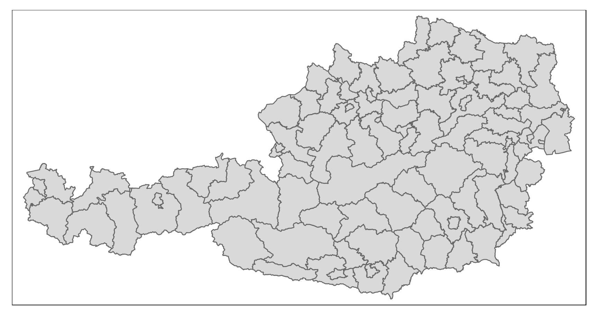

<!DOCTYPE html>
<html lang="" xml:lang="">
<head>

  <meta charset="utf-8" />
  <meta http-equiv="X-UA-Compatible" content="IE=edge" />
  <title>9 Deskriptive Statistik für metrische Daten | How 2 do Things with Numbers (SS 2022)</title>
  <meta name="description" content="9 Deskriptive Statistik für metrische Daten | How 2 do Things with Numbers (SS 2022)" />
  <meta name="generator" content="bookdown 0.24 and GitBook 2.6.7" />

  <meta property="og:title" content="9 Deskriptive Statistik für metrische Daten | How 2 do Things with Numbers (SS 2022)" />
  <meta property="og:type" content="book" />
  
  
  
  

  <meta name="twitter:card" content="summary" />
  <meta name="twitter:title" content="9 Deskriptive Statistik für metrische Daten | How 2 do Things with Numbers (SS 2022)" />
  
  
  

<meta name="author" content="Kami Höferl | https://orcid.org/0000-0002-5397-180X" />


  <meta name="viewport" content="width=device-width, initial-scale=1" />
  <meta name="apple-mobile-web-app-capable" content="yes" />
  <meta name="apple-mobile-web-app-status-bar-style" content="black" />
  
  
<link rel="prev" href="08_zusammenhaenge_kategoriale_variablen.html"/>
<link rel="next" href="10_metrische_zusammenhaenge.html"/>
<script src="libs/header-attrs-2.12/header-attrs.js"></script>
<script src="libs/jquery-3.6.0/jquery-3.6.0.min.js"></script>
<script src="https://cdn.jsdelivr.net/npm/fuse.js@6.4.6/dist/fuse.min.js"></script>
<link href="libs/gitbook-2.6.7/css/style.css" rel="stylesheet" />
<link href="libs/gitbook-2.6.7/css/plugin-table.css" rel="stylesheet" />
<link href="libs/gitbook-2.6.7/css/plugin-bookdown.css" rel="stylesheet" />
<link href="libs/gitbook-2.6.7/css/plugin-highlight.css" rel="stylesheet" />
<link href="libs/gitbook-2.6.7/css/plugin-search.css" rel="stylesheet" />
<link href="libs/gitbook-2.6.7/css/plugin-fontsettings.css" rel="stylesheet" />
<link href="libs/gitbook-2.6.7/css/plugin-clipboard.css" rel="stylesheet" />


<link href="libs/anchor-sections-1.1.0/anchor-sections.css" rel="stylesheet" />
<link href="libs/anchor-sections-1.1.0/anchor-sections-hash.css" rel="stylesheet" />
<script src="libs/anchor-sections-1.1.0/anchor-sections.js"></script>
<html>

  <head>
  <script>
    window.addEventListener("load", () => {
        const enabled = document.querySelectorAll(".fullscreen-enabled");
        for (let i = 0; i < enabled.length; i++) {
            enabled[i].style.cursor = "pointer";
            enabled[i].onclick = () => {
                enabled[i].requestFullscreen();
            };
        }
    });
  </script>
  </head>

  <body>
  <!-- body content here -->
  </body>

</html>


<style type="text/css">
pre > code.sourceCode { white-space: pre; position: relative; }
pre > code.sourceCode > span { display: inline-block; line-height: 1.25; }
pre > code.sourceCode > span:empty { height: 1.2em; }
.sourceCode { overflow: visible; }
code.sourceCode > span { color: inherit; text-decoration: inherit; }
pre.sourceCode { margin: 0; }
@media screen {
div.sourceCode { overflow: auto; }
}
@media print {
pre > code.sourceCode { white-space: pre-wrap; }
pre > code.sourceCode > span { text-indent: -5em; padding-left: 5em; }
}
pre.numberSource code
  { counter-reset: source-line 0; }
pre.numberSource code > span
  { position: relative; left: -4em; counter-increment: source-line; }
pre.numberSource code > span > a:first-child::before
  { content: counter(source-line);
    position: relative; left: -1em; text-align: right; vertical-align: baseline;
    border: none; display: inline-block;
    -webkit-touch-callout: none; -webkit-user-select: none;
    -khtml-user-select: none; -moz-user-select: none;
    -ms-user-select: none; user-select: none;
    padding: 0 4px; width: 4em;
    color: #aaaaaa;
  }
pre.numberSource { margin-left: 3em; border-left: 1px solid #aaaaaa;  padding-left: 4px; }
div.sourceCode
  {   }
@media screen {
pre > code.sourceCode > span > a:first-child::before { text-decoration: underline; }
}
code span.al { color: #ff0000; font-weight: bold; } /* Alert */
code span.an { color: #60a0b0; font-weight: bold; font-style: italic; } /* Annotation */
code span.at { color: #7d9029; } /* Attribute */
code span.bn { color: #40a070; } /* BaseN */
code span.bu { } /* BuiltIn */
code span.cf { color: #007020; font-weight: bold; } /* ControlFlow */
code span.ch { color: #4070a0; } /* Char */
code span.cn { color: #880000; } /* Constant */
code span.co { color: #60a0b0; font-style: italic; } /* Comment */
code span.cv { color: #60a0b0; font-weight: bold; font-style: italic; } /* CommentVar */
code span.do { color: #ba2121; font-style: italic; } /* Documentation */
code span.dt { color: #902000; } /* DataType */
code span.dv { color: #40a070; } /* DecVal */
code span.er { color: #ff0000; font-weight: bold; } /* Error */
code span.ex { } /* Extension */
code span.fl { color: #40a070; } /* Float */
code span.fu { color: #06287e; } /* Function */
code span.im { } /* Import */
code span.in { color: #60a0b0; font-weight: bold; font-style: italic; } /* Information */
code span.kw { color: #007020; font-weight: bold; } /* Keyword */
code span.op { color: #666666; } /* Operator */
code span.ot { color: #007020; } /* Other */
code span.pp { color: #bc7a00; } /* Preprocessor */
code span.sc { color: #4070a0; } /* SpecialChar */
code span.ss { color: #bb6688; } /* SpecialString */
code span.st { color: #4070a0; } /* String */
code span.va { color: #19177c; } /* Variable */
code span.vs { color: #4070a0; } /* VerbatimString */
code span.wa { color: #60a0b0; font-weight: bold; font-style: italic; } /* Warning */
</style>

<style type="text/css">
/* Used with Pandoc 2.11+ new --citeproc when CSL is used */
div.csl-bib-body { }
div.csl-entry {
  clear: both;
}
.hanging div.csl-entry {
  margin-left:2em;
  text-indent:-2em;
}
div.csl-left-margin {
  min-width:2em;
  float:left;
}
div.csl-right-inline {
  margin-left:2em;
  padding-left:1em;
}
div.csl-indent {
  margin-left: 2em;
}
</style>

<link rel="stylesheet" href="style.css" type="text/css" />
</head>

<body>


  <div class="book without-animation with-summary font-size-2 font-family-1" data-basepath=".">

    <div class="book-summary">
      <nav role="navigation">

<ul class="summary">
<li><a href="index.html#howdy">Howdy<span></span></a></li>
<li class="chapter" data-level="1" data-path="01_syllabus.html"><a href="01_syllabus.html"><i class="fa fa-check"></i><b>1</b> Ouvertüre (aka “Syllabus”)<span></span></a>
<ul>
<li class="chapter" data-level="1.1" data-path="01_syllabus.html"><a href="01_syllabus.html#lernziele"><i class="fa fa-check"></i><b>1.1</b> Lernziele<span></span></a></li>
<li class="chapter" data-level="1.2" data-path="01_syllabus.html"><a href="01_syllabus.html#zeitplanung"><i class="fa fa-check"></i><b>1.2</b> Zeitplanung<span></span></a></li>
<li class="chapter" data-level="1.3" data-path="01_syllabus.html"><a href="01_syllabus.html#rulez-of-the-game"><i class="fa fa-check"></i><b>1.3</b> Rulez of the Game<span></span></a></li>
<li class="chapter" data-level="1.4" data-path="01_syllabus.html"><a href="01_syllabus.html#übungsteile"><i class="fa fa-check"></i><b>1.4</b> Übungsteile<span></span></a></li>
<li class="chapter" data-level="1.5" data-path="01_syllabus.html"><a href="01_syllabus.html#bewertungskriterien"><i class="fa fa-check"></i><b>1.5</b> Bewertungskriterien<span></span></a></li>
<li class="chapter" data-level="1.6" data-path="01_syllabus.html"><a href="01_syllabus.html#formelles-zu-den-übungsarbeiten"><i class="fa fa-check"></i><b>1.6</b> Formelles zu den Übungsarbeiten<span></span></a></li>
<li class="chapter" data-level="1.7" data-path="01_syllabus.html"><a href="01_syllabus.html#empfehlung-zur-eingesetzten-software"><i class="fa fa-check"></i><b>1.7</b> Empfehlung zur eingesetzten Software<span></span></a></li>
<li class="chapter" data-level="1.8" data-path="01_syllabus.html"><a href="01_syllabus.html#ausgewählte-hilfestellungen-zum-thema-r-und-rstudio"><i class="fa fa-check"></i><b>1.8</b> Ausgewählte Hilfestellungen zum Thema R und RStudio<span></span></a></li>
<li class="chapter" data-level="1.9" data-path="01_syllabus.html"><a href="01_syllabus.html#literatur"><i class="fa fa-check"></i><b>1.9</b> Literatur zur Lehrveranstaltung<span></span></a></li>
</ul></li>
<li class="chapter" data-level="2" data-path="02_forschungsprozess.html"><a href="02_forschungsprozess.html"><i class="fa fa-check"></i><b>2</b> Wege zum empirischen Forschen<span></span></a>
<ul>
<li><a href="02_forschungsprozess.html#zielsetzung-dieser-einheit">📢 Zielsetzung dieser Einheit<span></span></a></li>
<li class="chapter" data-level="2.1" data-path="02_forschungsprozess.html"><a href="02_forschungsprozess.html#wozu-empirie"><i class="fa fa-check"></i><b>2.1</b> Wozu Empirie?<span></span></a></li>
<li class="chapter" data-level="2.2" data-path="02_forschungsprozess.html"><a href="02_forschungsprozess.html#aber-wie"><i class="fa fa-check"></i><b>2.2</b> Aber wie?<span></span></a></li>
<li class="chapter" data-level="2.3" data-path="02_forschungsprozess.html"><a href="02_forschungsprozess.html#hauptsache-daten"><i class="fa fa-check"></i><b>2.3</b> Hauptsache Daten?<span></span></a></li>
</ul></li>
<li class="chapter" data-level="3" data-path="03_messen.html"><a href="03_messen.html"><i class="fa fa-check"></i><b>3</b> Warmup: Messen und Skalen<span></span></a>
<ul>
<li><a href="03_messen.html#zielsetzung-dieser-einheit-1">📢 Zielsetzung dieser Einheit<span></span></a></li>
<li class="chapter" data-level="3.1" data-path="03_messen.html"><a href="03_messen.html#was-passiert-beim-messen"><i class="fa fa-check"></i><b>3.1</b> Was passiert beim Messen?<span></span></a></li>
<li class="chapter" data-level="3.2" data-path="03_messen.html"><a href="03_messen.html#skalenniveaus-reloaded"><i class="fa fa-check"></i><b>3.2</b> Skalenniveaus (reloaded)<span></span></a></li>
</ul></li>
<li class="chapter" data-level="4" data-path="04_messen_primaer_sekundaerdaten.html"><a href="04_messen_primaer_sekundaerdaten.html"><i class="fa fa-check"></i><b>4</b> Sekundärdaten gewinnen<span></span></a>
<ul>
<li><a href="04_messen_primaer_sekundaerdaten.html#zielsetzung-dieser-einheit-2">📢 Zielsetzung dieser Einheit<span></span></a></li>
<li class="chapter" data-level="4.1" data-path="04_messen_primaer_sekundaerdaten.html"><a href="04_messen_primaer_sekundaerdaten.html#sekundär-daten-gewinnen"><i class="fa fa-check"></i><b>4.1</b> (Sekundär-)Daten gewinnen<span></span></a>
<ul>
<li class="chapter" data-level="4.1.1" data-path="04_messen_primaer_sekundaerdaten.html"><a href="04_messen_primaer_sekundaerdaten.html#ein-technischer-aspekt-der-gewinnung-von-sekundärdaten"><i class="fa fa-check"></i><b>4.1.1</b> Ein technischer Aspekt der Gewinnung von Sekundärdaten<span></span></a></li>
</ul></li>
<li class="chapter" data-level="4.2" data-path="04_messen_primaer_sekundaerdaten.html"><a href="04_messen_primaer_sekundaerdaten.html#zur-qualität-von-sekundärdaten"><i class="fa fa-check"></i><b>4.2</b> Zur Qualität von Sekundärdaten<span></span></a></li>
<li class="chapter" data-level="4.3" data-path="04_messen_primaer_sekundaerdaten.html"><a href="04_messen_primaer_sekundaerdaten.html#sekundärdaten-als-open-data-nutzen-können"><i class="fa fa-check"></i><b>4.3</b> Sekundärdaten als “Open Data” nutzen (können)<span></span></a></li>
</ul></li>
<li class="chapter" data-level="5" data-path="05_primaererhebung.html"><a href="05_primaererhebung.html"><i class="fa fa-check"></i><b>5</b> Primärdaten gewinnen<span></span></a>
<ul>
<li><a href="05_primaererhebung.html#zielsetzung-dieser-einheit-3">📢 Zielsetzung dieser Einheit<span></span></a></li>
<li class="chapter" data-level="5.1" data-path="05_primaererhebung.html"><a href="05_primaererhebung.html#nicht-rekative-verfahren"><i class="fa fa-check"></i><b>5.1</b> Nicht-rekative Verfahren<span></span></a></li>
<li class="chapter" data-level="5.2" data-path="05_primaererhebung.html"><a href="05_primaererhebung.html#beobachtungen"><i class="fa fa-check"></i><b>5.2</b> Beobachtungen<span></span></a></li>
<li class="chapter" data-level="5.3" data-path="05_primaererhebung.html"><a href="05_primaererhebung.html#befragungen"><i class="fa fa-check"></i><b>5.3</b> Befragungen<span></span></a></li>
<li class="chapter" data-level="5.4" data-path="05_primaererhebung.html"><a href="05_primaererhebung.html#special-die-stichprobenziehung"><i class="fa fa-check"></i><b>5.4</b> Special: Die Stichprobenziehung<span></span></a></li>
</ul></li>
<li class="chapter" data-level="6" data-path="06_basics_datananalyse.html"><a href="06_basics_datananalyse.html"><i class="fa fa-check"></i><b>6</b> Die Basics zur Datenanalyse<span></span></a>
<ul>
<li><a href="06_basics_datananalyse.html#zielsetzung-dieser-einheit-4">📢 Zielsetzung dieser Einheit<span></span></a></li>
<li class="chapter" data-level="6.1" data-path="06_basics_datananalyse.html"><a href="06_basics_datananalyse.html#daten-analysieren---aber-wie"><i class="fa fa-check"></i><b>6.1</b> Daten analysieren - aber wie?<span></span></a></li>
<li class="chapter" data-level="6.2" data-path="06_basics_datananalyse.html"><a href="06_basics_datananalyse.html#die-hilfsmittel-r-rstudio"><i class="fa fa-check"></i><b>6.2</b> Die Hilfsmittel R &amp; RStudio<span></span></a></li>
<li class="chapter" data-level="6.3" data-path="06_basics_datananalyse.html"><a href="06_basics_datananalyse.html#grundlegende-datenstrukturen-in-r"><i class="fa fa-check"></i><b>6.3</b> Grundlegende Datenstrukturen in R<span></span></a></li>
<li class="chapter" data-level="6.4" data-path="06_basics_datananalyse.html"><a href="06_basics_datananalyse.html#daten-im--und-exportieren"><i class="fa fa-check"></i><b>6.4</b> Daten im- und exportieren<span></span></a>
<ul>
<li class="chapter" data-level="6.4.1" data-path="06_basics_datananalyse.html"><a href="06_basics_datananalyse.html#der-datenimport"><i class="fa fa-check"></i><b>6.4.1</b> Der Datenimport<span></span></a></li>
<li class="chapter" data-level="6.4.2" data-path="06_basics_datananalyse.html"><a href="06_basics_datananalyse.html#der-datenexport"><i class="fa fa-check"></i><b>6.4.2</b> Der Datenexport<span></span></a></li>
</ul></li>
</ul></li>
<li class="chapter" data-level="7" data-path="07_n_kategoriale_variablen.html"><a href="07_n_kategoriale_variablen.html"><i class="fa fa-check"></i><b>7</b> Die Häufigkeitsanalyse kategorialer Daten<span></span></a>
<ul>
<li><a href="07_n_kategoriale_variablen.html#zielsetzung-dieser-einheit-5">📢 Zielsetzung dieser Einheit<span></span></a></li>
<li class="chapter" data-level="7.1" data-path="07_n_kategoriale_variablen.html"><a href="07_n_kategoriale_variablen.html#katdatasetup"><i class="fa fa-check"></i><b>7.1</b> Kategoriale Daten auswerten<span></span></a></li>
<li class="chapter" data-level="7.2" data-path="07_n_kategoriale_variablen.html"><a href="07_n_kategoriale_variablen.html#vorbereitendes"><i class="fa fa-check"></i><b>7.2</b> Vorbereitendes<span></span></a></li>
<li class="chapter" data-level="7.3" data-path="07_n_kategoriale_variablen.html"><a href="07_n_kategoriale_variablen.html#katdatamanipul"><i class="fa fa-check"></i><b>7.3</b> Der Datenimport, die Datenaufbereitung und -validierung<span></span></a></li>
<li class="chapter" data-level="7.4" data-path="07_n_kategoriale_variablen.html"><a href="07_n_kategoriale_variablen.html#die-häufikgeitsanalyse-einer-variablen"><i class="fa fa-check"></i><b>7.4</b> Die Häufikgeitsanalyse einer Variablen<span></span></a></li>
<li class="chapter" data-level="7.5" data-path="07_n_kategoriale_variablen.html"><a href="07_n_kategoriale_variablen.html#katdatabivarn"><i class="fa fa-check"></i><b>7.5</b> Die Häufigkeitsanalyse zweier kategorialer Variablen<span></span></a></li>
</ul></li>
<li class="chapter" data-level="8" data-path="08_zusammenhaenge_kategoriale_variablen.html"><a href="08_zusammenhaenge_kategoriale_variablen.html"><i class="fa fa-check"></i><b>8</b> Zusammenhänge zwischen kategorialen Variablen<span></span></a>
<ul>
<li><a href="08_zusammenhaenge_kategoriale_variablen.html#zielsetzung-dieser-einheit-6">📢 Zielsetzung dieser Einheit<span></span></a></li>
<li class="chapter" data-level="8.1" data-path="08_zusammenhaenge_kategoriale_variablen.html"><a href="08_zusammenhaenge_kategoriale_variablen.html#die-ausgangslage"><i class="fa fa-check"></i><b>8.1</b> Die Ausgangslage<span></span></a></li>
<li class="chapter" data-level="8.2" data-path="08_zusammenhaenge_kategoriale_variablen.html"><a href="08_zusammenhaenge_kategoriale_variablen.html#zusammenhänge-zwischen-zwei-kategorialen-variablen-messen---die-theorie"><i class="fa fa-check"></i><b>8.2</b> Zusammenhänge zwischen zwei kategorialen Variablen messen - die Theorie<span></span></a></li>
<li class="chapter" data-level="8.3" data-path="08_zusammenhaenge_kategoriale_variablen.html"><a href="08_zusammenhaenge_kategoriale_variablen.html#überprüfung-des-zusammenhangs-zwischen-politischer-orientierung-und-angemessenheit-des-pandemiemanagements"><i class="fa fa-check"></i><b>8.3</b> Überprüfung des Zusammenhangs zwischen politischer Orientierung und Angemessenheit des Pandemiemanagements<span></span></a></li>
<li class="chapter" data-level="8.4" data-path="08_zusammenhaenge_kategoriale_variablen.html"><a href="08_zusammenhaenge_kategoriale_variablen.html#charakterisierung-des-zusammenhang-mittels-der-pearson-residuen"><i class="fa fa-check"></i><b>8.4</b> Charakterisierung des Zusammenhang mittels der Pearson Residuen<span></span></a></li>
<li class="chapter" data-level="8.5" data-path="08_zusammenhaenge_kategoriale_variablen.html"><a href="08_zusammenhaenge_kategoriale_variablen.html#beurteilung-der-stärke-des-zusammenhangs-mit-cramers-v"><i class="fa fa-check"></i><b>8.5</b> Beurteilung der Stärke des Zusammenhangs mit Cramers V<span></span></a></li>
</ul></li>
<li class="chapter" data-level="9" data-path="09_deskriptive_statistik_metrisch.html"><a href="09_deskriptive_statistik_metrisch.html"><i class="fa fa-check"></i><b>9</b> Deskriptive Statistik für metrische Daten<span></span></a>
<ul>
<li><a href="09_deskriptive_statistik_metrisch.html#zielsetzung-dieser-einheit-7">📢 Zielsetzung dieser Einheit<span></span></a></li>
<li class="chapter" data-level="9.1" data-path="09_deskriptive_statistik_metrisch.html"><a href="09_deskriptive_statistik_metrisch.html#ausgangDeskriptivMetrisch"><i class="fa fa-check"></i><b>9.1</b> Die Ausgangslage<span></span></a></li>
<li class="chapter" data-level="9.2" data-path="09_deskriptive_statistik_metrisch.html"><a href="09_deskriptive_statistik_metrisch.html#der-datenimport-die-datenaufbereitung-und--validierung"><i class="fa fa-check"></i><b>9.2</b> Der Datenimport, die Datenaufbereitung und -validierung<span></span></a></li>
<li class="chapter" data-level="9.3" data-path="09_deskriptive_statistik_metrisch.html"><a href="09_deskriptive_statistik_metrisch.html#ein-blick-auf-klassische-lage--und-streuungsparameter"><i class="fa fa-check"></i><b>9.3</b> Ein Blick auf klassische Lage- und Streuungsparameter<span></span></a></li>
<li class="chapter" data-level="9.4" data-path="09_deskriptive_statistik_metrisch.html"><a href="09_deskriptive_statistik_metrisch.html#exkurs-für-motivierte-geographinnen-räumlich-explizite-deskription"><i class="fa fa-check"></i><b>9.4</b> Exkurs für motivierte GeographInnen: Räumlich explizite Deskription<span></span></a></li>
<li class="chapter" data-level="9.5" data-path="09_deskriptive_statistik_metrisch.html"><a href="09_deskriptive_statistik_metrisch.html#lage--und-streuungsparameter-graphisch-darstellen"><i class="fa fa-check"></i><b>9.5</b> Lage- und Streuungsparameter graphisch darstellen<span></span></a>
<ul>
<li class="chapter" data-level="9.5.1" data-path="09_deskriptive_statistik_metrisch.html"><a href="09_deskriptive_statistik_metrisch.html#histogramme"><i class="fa fa-check"></i><b>9.5.1</b> <strong>Histogramme</strong><span></span></a></li>
<li class="chapter" data-level="9.5.2" data-path="09_deskriptive_statistik_metrisch.html"><a href="09_deskriptive_statistik_metrisch.html#boxplots"><i class="fa fa-check"></i><b>9.5.2</b> <strong>Boxplots</strong><span></span></a></li>
</ul></li>
<li class="chapter" data-level="9.6" data-path="09_deskriptive_statistik_metrisch.html"><a href="09_deskriptive_statistik_metrisch.html#ein-erster-blick-auf-mögliche-zusammenhänge"><i class="fa fa-check"></i><b>9.6</b> Ein erster Blick auf mögliche Zusammenhänge<span></span></a></li>
</ul></li>
<li class="chapter" data-level="10" data-path="10_metrische_zusammenhaenge.html"><a href="10_metrische_zusammenhaenge.html"><i class="fa fa-check"></i><b>10</b> Zusammenhänge zwischen zwei metrischen Variablen<span></span></a>
<ul>
<li><a href="10_metrische_zusammenhaenge.html#zielsetzung-dieser-einheit-8">📢 Zielsetzung dieser Einheit<span></span></a></li>
<li class="chapter" data-level="10.1" data-path="10_metrische_zusammenhaenge.html"><a href="10_metrische_zusammenhaenge.html#die-ausgangslage-1"><i class="fa fa-check"></i><b>10.1</b> Die Ausgangslage<span></span></a></li>
<li class="chapter" data-level="10.2" data-path="10_metrische_zusammenhaenge.html"><a href="10_metrische_zusammenhaenge.html#datenimport-und--aufbereitung"><i class="fa fa-check"></i><b>10.2</b> Datenimport und -aufbereitung<span></span></a></li>
<li class="chapter" data-level="10.3" data-path="10_metrische_zusammenhaenge.html"><a href="10_metrische_zusammenhaenge.html#den-zusammenhang-graphisch-erkunden"><i class="fa fa-check"></i><b>10.3</b> Den Zusammenhang graphisch erkunden<span></span></a></li>
<li class="chapter" data-level="10.4" data-path="10_metrische_zusammenhaenge.html"><a href="10_metrische_zusammenhaenge.html#den-zusammenhang-numerisch-abbilden"><i class="fa fa-check"></i><b>10.4</b> Den Zusammenhang numerisch abbilden<span></span></a>
<ul>
<li class="chapter" data-level="10.4.1" data-path="10_metrische_zusammenhaenge.html"><a href="10_metrische_zusammenhaenge.html#überprüfung-der-normalverteilung"><i class="fa fa-check"></i><b>10.4.1</b> Überprüfung der Normalverteilung<span></span></a></li>
<li class="chapter" data-level="10.4.2" data-path="10_metrische_zusammenhaenge.html"><a href="10_metrische_zusammenhaenge.html#messung-des-zusammenhangs-zwischen-covid-erkrankungen-und-todesfällen-mittels-rangkorrelation"><i class="fa fa-check"></i><b>10.4.2</b> Messung des Zusammenhangs zwischen COVID Erkrankungen und Todesfällen mittels Rangkorrelation<span></span></a></li>
<li class="chapter" data-level="10.4.3" data-path="10_metrische_zusammenhaenge.html"><a href="10_metrische_zusammenhaenge.html#messung-des-zusammenhangs-zwischen-covid-erkrankungen-und-todesfällen-mittels-des-korrelationskoeffizienten-nach-pearson"><i class="fa fa-check"></i><b>10.4.3</b> Messung des Zusammenhangs zwischen COVID Erkrankungen und Todesfällen mittels des Korrelationskoeffizienten nach Pearson<span></span></a></li>
<li class="chapter" data-level="10.4.4" data-path="10_metrische_zusammenhaenge.html"><a href="10_metrische_zusammenhaenge.html#ermittlung-der-bundeslandspezifischen-rangkorrelationskoeffizienten"><i class="fa fa-check"></i><b>10.4.4</b> Ermittlung der bundeslandspezifischen Rangkorrelationskoeffizienten<span></span></a></li>
</ul></li>
<li class="chapter" data-level="10.5" data-path="10_metrische_zusammenhaenge.html"><a href="10_metrische_zusammenhaenge.html#lineare-regression-als-alternativer-zugang"><i class="fa fa-check"></i><b>10.5</b> Lineare Regression als alternativer Zugang<span></span></a></li>
<li class="chapter" data-level="10.6" data-path="10_metrische_zusammenhaenge.html"><a href="10_metrische_zusammenhaenge.html#konklusio"><i class="fa fa-check"></i><b>10.6</b> Konklusio<span></span></a></li>
</ul></li>
<li class="chapter" data-level="11" data-path="11_gruppenunterschiede_v2.html"><a href="11_gruppenunterschiede_v2.html"><i class="fa fa-check"></i><b>11</b> Gruppenunterschiede erforschen<span></span></a>
<ul>
<li><a href="11_gruppenunterschiede_v2.html#zielsetzung-dieser-einheit-9">📢 Zielsetzung dieser Einheit<span></span></a></li>
<li class="chapter" data-level="11.1" data-path="11_gruppenunterschiede_v2.html"><a href="11_gruppenunterschiede_v2.html#die-ausgangslage-2"><i class="fa fa-check"></i><b>11.1</b> Die Ausgangslage<span></span></a></li>
<li class="chapter" data-level="11.2" data-path="11_gruppenunterschiede_v2.html"><a href="11_gruppenunterschiede_v2.html#datenimport-und--aufbereitung-1"><i class="fa fa-check"></i><b>11.2</b> Datenimport und -aufbereitung<span></span></a></li>
<li class="chapter" data-level="11.3" data-path="11_gruppenunterschiede_v2.html"><a href="11_gruppenunterschiede_v2.html#vorbereitende-überlegungen"><i class="fa fa-check"></i><b>11.3</b> Vorbereitende Überlegungen<span></span></a>
<ul>
<li class="chapter" data-level="11.3.1" data-path="11_gruppenunterschiede_v2.html"><a href="11_gruppenunterschiede_v2.html#ermitteln-des-passenden-verfahrens"><i class="fa fa-check"></i><b>11.3.1</b> Ermitteln des passenden Verfahrens<span></span></a></li>
</ul></li>
<li class="chapter" data-level="11.4" data-path="11_gruppenunterschiede_v2.html"><a href="11_gruppenunterschiede_v2.html#gruppenunterschiede-bei-normalverteilten-variablen-mittels-varianzanalyse-untersuchen"><i class="fa fa-check"></i><b>11.4</b> Gruppenunterschiede bei normalverteilten Variablen mittels Varianzanalyse untersuchen<span></span></a>
<ul>
<li class="chapter" data-level="11.4.1" data-path="11_gruppenunterschiede_v2.html"><a href="11_gruppenunterschiede_v2.html#welch"><i class="fa fa-check"></i><b>11.4.1</b> Gruppenunterschiede bei Variablen mit Varianzheterogenität erkunden<span></span></a></li>
</ul></li>
<li class="chapter" data-level="11.5" data-path="11_gruppenunterschiede_v2.html"><a href="11_gruppenunterschiede_v2.html#gruppenunterschiede-bei-ordinalen-oder-nicht-normalverteilten-variablen"><i class="fa fa-check"></i><b>11.5</b> Gruppenunterschiede bei ordinalen oder nicht normalverteilten Variablen<span></span></a>
<ul>
<li class="chapter" data-level="11.5.1" data-path="11_gruppenunterschiede_v2.html"><a href="11_gruppenunterschiede_v2.html#vorbereitendes-1"><i class="fa fa-check"></i><b>11.5.1</b> Vorbereitendes<span></span></a></li>
<li class="chapter" data-level="11.5.2" data-path="11_gruppenunterschiede_v2.html"><a href="11_gruppenunterschiede_v2.html#eine-erster-blick-auf-die-politischen-gruppen-und-deren-sorge-vor-einer-ansteckung"><i class="fa fa-check"></i><b>11.5.2</b> Eine erster Blick auf die politischen Gruppen und deren Sorge vor einer Ansteckung<span></span></a></li>
<li class="chapter" data-level="11.5.3" data-path="11_gruppenunterschiede_v2.html"><a href="11_gruppenunterschiede_v2.html#gruppenunterschieden-mit-dem-kruskal-wallis-test-nachgehen"><i class="fa fa-check"></i><b>11.5.3</b> Gruppenunterschieden mit dem Kruskal-Wallis-Test nachgehen<span></span></a></li>
</ul></li>
</ul></li>
<li class="chapter" data-level="12" data-path="666_lit.html"><a href="666_lit.html"><i class="fa fa-check"></i><b>12</b> Quellen<span></span></a></li>
<li class="chapter" data-level="13" data-path="80_athome1.html"><a href="80_athome1.html"><i class="fa fa-check"></i><b>13</b> @Home1: Einen Fragebogen in Limesurvey umsetzen<span></span></a>
<ul>
<li><a href="80_athome1.html#zielsetzung">📢 Zielsetzung<span></span></a></li>
<li class="chapter" data-level="13.1" data-path="80_athome1.html"><a href="80_athome1.html#ausgangslage"><i class="fa fa-check"></i><b>13.1</b> Ausgangslage<span></span></a></li>
<li class="chapter" data-level="13.2" data-path="80_athome1.html"><a href="80_athome1.html#aufgabenstellung"><i class="fa fa-check"></i><b>13.2</b> Aufgabenstellung<span></span></a></li>
<li class="chapter" data-level="13.3" data-path="80_athome1.html"><a href="80_athome1.html#formelles"><i class="fa fa-check"></i><b>13.3</b> Formelles<span></span></a></li>
</ul></li>
<li class="chapter" data-level="14" data-path="81_athome2.html"><a href="81_athome2.html"><i class="fa fa-check"></i><b>14</b> @Home2: Eine einfache Quotenstichprobe<span></span></a>
<ul>
<li><a href="81_athome2.html#zielsetzung-1">📢 Zielsetzung<span></span></a></li>
<li class="chapter" data-level="14.1" data-path="81_athome2.html"><a href="81_athome2.html#ausgangslage-1"><i class="fa fa-check"></i><b>14.1</b> Ausgangslage<span></span></a></li>
<li class="chapter" data-level="14.2" data-path="81_athome2.html"><a href="81_athome2.html#aufgabenstellung-1"><i class="fa fa-check"></i><b>14.2</b> Aufgabenstellung<span></span></a></li>
<li class="chapter" data-level="14.3" data-path="81_athome2.html"><a href="81_athome2.html#formelles-1"><i class="fa fa-check"></i><b>14.3</b> Formelles<span></span></a></li>
</ul></li>
<li class="chapter" data-level="15" data-path="82_athome3.html"><a href="82_athome3.html"><i class="fa fa-check"></i><b>15</b> @Home3: Zusammenhänge und Unterschiede<span></span></a>
<ul>
<li><a href="82_athome3.html#zielsetzung-2">📢 Zielsetzung<span></span></a></li>
<li class="chapter" data-level="15.1" data-path="82_athome3.html"><a href="82_athome3.html#beispiel-a-covid-19-impfungen-in-österreich"><i class="fa fa-check"></i><b>15.1</b> Beispiel A: COVID-19 Impfungen in Österreich<span></span></a></li>
<li class="chapter" data-level="15.2" data-path="82_athome3.html"><a href="82_athome3.html#beispiel-b-bundesdeutsche-wahrnehmungen-zur-covid-19-pandemie"><i class="fa fa-check"></i><b>15.2</b> Beispiel B: Bundesdeutsche Wahrnehmungen zur COVID-19 Pandemie<span></span></a></li>
<li class="chapter" data-level="15.3" data-path="82_athome3.html"><a href="82_athome3.html#formalia"><i class="fa fa-check"></i><b>15.3</b> Formalia<span></span></a>
<ul>
<li class="chapter" data-level="15.3.1" data-path="82_athome3.html"><a href="82_athome3.html#deadline-verpasst"><i class="fa fa-check"></i><b>15.3.1</b> Deadline verpasst?<span></span></a></li>
</ul></li>
</ul></li>
</ul>

      </nav>
    </div>

    <div class="book-body">
      <div class="body-inner">
        <div class="book-header" role="navigation">
          <h1>
            <i class="fa fa-circle-o-notch fa-spin"></i><a href="./">How 2 do Things with Numbers (SS 2022)</a>
          </h1>
        </div>

        <div class="page-wrapper" tabindex="-1" role="main">
          <div class="page-inner">

            <section class="normal" id="section-">
<div id="deskriptiv-metrisch" class="section level1 hasAnchor" number="9">
<h1><span class="header-section-number">9</span> Deskriptive Statistik für metrische Daten<a href="09_deskriptive_statistik_metrisch.html#deskriptiv-metrisch" class="anchor-section" aria-label="Anchor link to header"></a></h1>
<div id="zielsetzung-dieser-einheit-7" class="section level2 unnumbered hasAnchor">
<h2>📢 Zielsetzung dieser Einheit<a href="#zielsetzung-dieser-einheit-7" class="anchor-section" aria-label="Anchor link to header"></a></h2>
<p>Diese Einheit widmet sich der <strong>Beschreibung metrischer Variablen</strong>. Anhand des Beispiels von COVID-19 Erkrankungen in österreichischen Bezirken werden wir</p>
<ul>
<li>die numerische Ermittlung klassischer <strong>Lage- und Streuungsparameter</strong> behandeln;</li>
<li>einen Exkurs zur Frage der <strong>Normierung</strong> von Daten unternehmen;</li>
<li>die Möglichkeiten der <strong>graphischen Darstellung</strong> von Lageparametern und der Variablen innewohnenden Streuung behandeln;</li>
<li>abschließend einen <strong>Ausblick auf bivariate Zusammenhänge</strong> zwischen metrischen Variablen werfen.</li>
</ul>
<p>
<strong>tl;dr: </strong><a href="https://kamihoeferl.at/lehre/vu_sozwiss_1/09_deskriptive_statistik_metrisch.R" type="application/octet-stream">Her mit dem Code!</a>
</p>
<hr />
</div>
<div id="ausgangDeskriptivMetrisch" class="section level2 hasAnchor" number="9.1">
<h2><span class="header-section-number">9.1</span> Die Ausgangslage<a href="09_deskriptive_statistik_metrisch.html#ausgangDeskriptivMetrisch" class="anchor-section" aria-label="Anchor link to header"></a></h2>
<p>Wie bei den kategorialen wollen wir uns nun den Möglichkeiten zur Beschreibung metrischer Daten widmen. Dazu werden wir folgendes Beispiel nutzen:</p>
<p>Die <a href="https://www.ages.at/startseite/">Österreichische Agentur für Gesundheit und Ernährungssicherheit AGE</a> bietet tagesaktuell Informationen zur <a href="https://www.data.gv.at/katalog/dataset/2f6649b6-2b2d-49a9-ab31-6c7e43728001">COVID-19 Fällen in den politischen Bezirken Österreichs</a> an. Wir wollen diese Daten nutzen, um</p>
<ol style="list-style-type: decimal">
<li><p>herauszufinden, wie unterschiedlich sich <strong>COVID-19 Erkrankungen</strong> (gesamt und in den letzten sieben Tagen - Variablen Anzahl und AnzahlFaelle7Tage) und <strong>Todesfälle</strong> (Variable AnzahlTot) <strong>auf die Bezirke und Bundesländer verteilen</strong>;</p></li>
<li><p>herauszufinden, ob es auf Eben der Bezirke zwischen der Anzahl der <strong>COVID-19 Erkrankungen</strong> (Variable Anzahl) und <strong>Todesfälle</strong> (Variable AnzahlTot) einen <strong>Zusammenhang</strong> gibt.</p></li>
</ol>
<p><strong>Ein praktischer Hinweis:</strong><br />
Um diese Einheit auch zu einem späteren Zeitpunkt nachvollziehen zu können, werden nicht die tagesaktuellen Daten der AGES genutzt. Stattdessen wurden diese Daten zum Stichtag 25.05.2021 bezogen und als CSV-Datensatz abgelegt.</p>
<p>👉 Diese Stichtagsdaten können <a href="data/agesRohdaten_25-05-21.csv"><strong>hier als CSV-Datei heruntergeladen</strong></a> werden.</p>
</div>
<div id="der-datenimport-die-datenaufbereitung-und--validierung" class="section level2 hasAnchor" number="9.2">
<h2><span class="header-section-number">9.2</span> Der Datenimport, die Datenaufbereitung und -validierung<a href="09_deskriptive_statistik_metrisch.html#der-datenimport-die-datenaufbereitung-und--validierung" class="anchor-section" aria-label="Anchor link to header"></a></h2>
<p>Zur Vorbereitung der weiteren Analyse laden wir zunächst die <a href="https://www.tidyverse.org">Packages tidyverse</a> (ggplot, dplyr etc.) und <a href="https://cran.r-project.org/web/packages/scales/index.html">scales</a> (zur Formatierung von Achsen bei Abbildungen):</p>
<div class="sourceCode" id="cb98"><pre class="sourceCode r"><code class="sourceCode r"><span id="cb98-1"><a href="09_deskriptive_statistik_metrisch.html#cb98-1" aria-hidden="true" tabindex="-1"></a><span class="fu">library</span>(tidyverse)</span>
<span id="cb98-2"><a href="09_deskriptive_statistik_metrisch.html#cb98-2" aria-hidden="true" tabindex="-1"></a><span class="fu">library</span>(scales)</span></code></pre></div>
<p>Dann holen wir uns die Stichtagsdaten und werfen einen Blick auf ihre Struktur:</p>
<div class="sourceCode" id="cb99"><pre class="sourceCode r"><code class="sourceCode r"><span id="cb99-1"><a href="09_deskriptive_statistik_metrisch.html#cb99-1" aria-hidden="true" tabindex="-1"></a>agesRohdaten <span class="ot">&lt;-</span> <span class="fu">read.csv2</span>(<span class="st">&quot;data/agesRohdaten_25-05-21.csv&quot;</span>, <span class="at">encoding =</span> <span class="st">&quot;UTF-8&quot;</span>) <span class="sc">%&gt;%</span></span>
<span id="cb99-2"><a href="09_deskriptive_statistik_metrisch.html#cb99-2" aria-hidden="true" tabindex="-1"></a>  <span class="fu">as_tibble</span>()</span>
<span id="cb99-3"><a href="09_deskriptive_statistik_metrisch.html#cb99-3" aria-hidden="true" tabindex="-1"></a><span class="fu">str</span>(agesRohdaten)</span></code></pre></div>
<pre><code>## tibble [94 x 7] (S3: tbl_df/tbl/data.frame)
##  $ X                : int [1:94] 1 2 3 4 5 6 7 8 9 10 ...
##  $ Bezirk           : chr [1:94] &quot;Eisenstadt(Stadt)&quot; &quot;Rust(Stadt)&quot; &quot;Eisenstadt-Umgebung&quot; &quot;Güssing&quot; ...
##  $ GKZ              : int [1:94] 101 102 103 104 105 106 107 108 109 201 ...
##  $ AnzEinwohner     : int [1:94] 14816 1980 43236 25699 17097 40042 59990 37384 54192 101300 ...
##  $ Anzahl           : int [1:94] 985 76 2347 1822 1298 2268 3248 2220 3618 6200 ...
##  $ AnzahlTot        : int [1:94] 11 0 25 56 26 32 42 41 91 158 ...
##  $ AnzahlFaelle7Tage: int [1:94] 5 1 12 7 5 16 19 5 13 41 ...</code></pre>
<p>Sicherheitshalber halten wir noch nach möglichen “Löchern” (aka NAs) in den Daten Ausschau:</p>
<div class="sourceCode" id="cb101"><pre class="sourceCode r"><code class="sourceCode r"><span id="cb101-1"><a href="09_deskriptive_statistik_metrisch.html#cb101-1" aria-hidden="true" tabindex="-1"></a><span class="fu">colSums</span>(<span class="fu">is.na</span>(agesRohdaten)) <span class="sc">%&gt;%</span></span>
<span id="cb101-2"><a href="09_deskriptive_statistik_metrisch.html#cb101-2" aria-hidden="true" tabindex="-1"></a>  knitr<span class="sc">::</span><span class="fu">kable</span>()</span></code></pre></div>
<table>
<thead>
<tr class="header">
<th align="left"></th>
<th align="right">x</th>
</tr>
</thead>
<tbody>
<tr class="odd">
<td align="left">X</td>
<td align="right">0</td>
</tr>
<tr class="even">
<td align="left">Bezirk</td>
<td align="right">0</td>
</tr>
<tr class="odd">
<td align="left">GKZ</td>
<td align="right">0</td>
</tr>
<tr class="even">
<td align="left">AnzEinwohner</td>
<td align="right">0</td>
</tr>
<tr class="odd">
<td align="left">Anzahl</td>
<td align="right">0</td>
</tr>
<tr class="even">
<td align="left">AnzahlTot</td>
<td align="right">0</td>
</tr>
<tr class="odd">
<td align="left">AnzahlFaelle7Tage</td>
<td align="right">0</td>
</tr>
</tbody>
</table>
<p>Sehr gut, wir haben also keine Löcher in unserem Datensatz.</p>
<p>Bevor wir in die eigentliche Analyse einsteigen, wollen wir noch folgende <strong>zwei Schritte</strong> setzen:</p>
<ol style="list-style-type: decimal">
<li>Um die COVID-19 Zahlen der Bundesländern vergleichen zu können, müssen wir die <strong>Bezirke</strong> ebendiesen zuordnen.</li>
<li>Um eine Vergleichbarkeit der COVID-19 Erkrankungen zwischen den Bezirken herbeizuführen, <strong>normieren</strong> wir die Angaben zu den Erkrankungen (in den letzten sieben Tagen) und Verstorbenen auf 100.000 Einwohner.</li>
</ol>
<p>Für die <strong>Zuordnung der Bezirke zu ihrem Bundesland</strong> werfen wir einen Blick auf die Logik der Vergabe von Kennziffern (Variable GKZ) für Bezirke in Österreich:</p>
<p><a href="http://statistik.at/web_de/klassifikationen/regionale_gliederungen/politische_bezirke/index.html" class="uri">http://statistik.at/web_de/klassifikationen/regionale_gliederungen/politische_bezirke</a></p>
<p>Wir wissen jetzt also, dass die <strong>erste Stelle der Variable GKZ</strong> als Index für die Liste der alphabetisch aufsteigend sortierten Bundesländernamen dient. Daher können wir folgendes machen:</p>
<div class="sourceCode" id="cb102"><pre class="sourceCode r"><code class="sourceCode r"><span id="cb102-1"><a href="09_deskriptive_statistik_metrisch.html#cb102-1" aria-hidden="true" tabindex="-1"></a>covidCases <span class="ot">&lt;-</span> agesRohdaten <span class="sc">%&gt;%</span></span>
<span id="cb102-2"><a href="09_deskriptive_statistik_metrisch.html#cb102-2" aria-hidden="true" tabindex="-1"></a>  <span class="fu">mutate</span>(<span class="at">bula =</span> <span class="fu">factor</span>(<span class="fu">floor</span>(GKZ<span class="sc">/</span><span class="dv">100</span>),</span>
<span id="cb102-3"><a href="09_deskriptive_statistik_metrisch.html#cb102-3" aria-hidden="true" tabindex="-1"></a>                       <span class="at">levels =</span> <span class="fu">c</span>(<span class="dv">1</span><span class="sc">:</span><span class="dv">9</span>),</span>
<span id="cb102-4"><a href="09_deskriptive_statistik_metrisch.html#cb102-4" aria-hidden="true" tabindex="-1"></a>                       <span class="at">labels =</span> <span class="fu">c</span>(<span class="st">&quot;Burgenland&quot;</span>,</span>
<span id="cb102-5"><a href="09_deskriptive_statistik_metrisch.html#cb102-5" aria-hidden="true" tabindex="-1"></a>                                  <span class="st">&quot;Kärnten&quot;</span>,</span>
<span id="cb102-6"><a href="09_deskriptive_statistik_metrisch.html#cb102-6" aria-hidden="true" tabindex="-1"></a>                                  <span class="st">&quot;Niederösterreich&quot;</span>,</span>
<span id="cb102-7"><a href="09_deskriptive_statistik_metrisch.html#cb102-7" aria-hidden="true" tabindex="-1"></a>                                  <span class="st">&quot;Oberösterreich&quot;</span>,</span>
<span id="cb102-8"><a href="09_deskriptive_statistik_metrisch.html#cb102-8" aria-hidden="true" tabindex="-1"></a>                                  <span class="st">&quot;Salzburg&quot;</span>,</span>
<span id="cb102-9"><a href="09_deskriptive_statistik_metrisch.html#cb102-9" aria-hidden="true" tabindex="-1"></a>                                  <span class="st">&quot;Steiermark&quot;</span>,</span>
<span id="cb102-10"><a href="09_deskriptive_statistik_metrisch.html#cb102-10" aria-hidden="true" tabindex="-1"></a>                                  <span class="st">&quot;Tirol&quot;</span>,</span>
<span id="cb102-11"><a href="09_deskriptive_statistik_metrisch.html#cb102-11" aria-hidden="true" tabindex="-1"></a>                                  <span class="st">&quot;Vorarlberg&quot;</span>,</span>
<span id="cb102-12"><a href="09_deskriptive_statistik_metrisch.html#cb102-12" aria-hidden="true" tabindex="-1"></a>                                  <span class="st">&quot;Wien&quot;</span>)</span>
<span id="cb102-13"><a href="09_deskriptive_statistik_metrisch.html#cb102-13" aria-hidden="true" tabindex="-1"></a>                       )</span>
<span id="cb102-14"><a href="09_deskriptive_statistik_metrisch.html#cb102-14" aria-hidden="true" tabindex="-1"></a>         )</span>
<span id="cb102-15"><a href="09_deskriptive_statistik_metrisch.html#cb102-15" aria-hidden="true" tabindex="-1"></a><span class="fu">summary</span>(covidCases<span class="sc">$</span>bula)</span></code></pre></div>
<pre><code>##       Burgenland          Kärnten Niederösterreich   Oberösterreich 
##                9               10               24               18 
##         Salzburg       Steiermark            Tirol       Vorarlberg 
##                6               13                9                4 
##             Wien 
##                1</code></pre>
<p>Zuletzt noch das <strong>Normieren</strong> der Variablen Anzahl, AnzahlTot und Anzahl7Tage auf 100.000 Einwohner:</p>
<div class="sourceCode" id="cb104"><pre class="sourceCode r"><code class="sourceCode r"><span id="cb104-1"><a href="09_deskriptive_statistik_metrisch.html#cb104-1" aria-hidden="true" tabindex="-1"></a>covidCases <span class="ot">&lt;-</span> covidCases <span class="sc">%&gt;%</span></span>
<span id="cb104-2"><a href="09_deskriptive_statistik_metrisch.html#cb104-2" aria-hidden="true" tabindex="-1"></a>  <span class="fu">mutate</span>(<span class="at">Anzahl_100k =</span> Anzahl<span class="sc">/</span>(AnzEinwohner<span class="sc">/</span><span class="dv">100000</span>),</span>
<span id="cb104-3"><a href="09_deskriptive_statistik_metrisch.html#cb104-3" aria-hidden="true" tabindex="-1"></a>         <span class="at">AnzahlTot_100k =</span> AnzahlTot<span class="sc">/</span>(AnzEinwohner<span class="sc">/</span><span class="dv">100000</span>),</span>
<span id="cb104-4"><a href="09_deskriptive_statistik_metrisch.html#cb104-4" aria-hidden="true" tabindex="-1"></a>         <span class="at">Anzahl7Tage_100k =</span> AnzahlFaelle7Tage<span class="sc">/</span>(AnzEinwohner<span class="sc">/</span><span class="dv">100000</span>))</span></code></pre></div>
<p>Sehr gut, nun wollen wir die am Beginn gestellten Fragen mithilfe dieser Daten beantworten.</p>
</div>
<div id="ein-blick-auf-klassische-lage--und-streuungsparameter" class="section level2 hasAnchor" number="9.3">
<h2><span class="header-section-number">9.3</span> Ein Blick auf klassische Lage- und Streuungsparameter<a href="09_deskriptive_statistik_metrisch.html#ein-blick-auf-klassische-lage--und-streuungsparameter" class="anchor-section" aria-label="Anchor link to header"></a></h2>
<p>Um einen raschen Überblick auf (nicht nur) die bekanntesten Lageparameter wie das arithmetische Mittel und Streuungsparamter zu erhalten, schreiben wir:</p>
<div class="sourceCode" id="cb105"><pre class="sourceCode r"><code class="sourceCode r"><span id="cb105-1"><a href="09_deskriptive_statistik_metrisch.html#cb105-1" aria-hidden="true" tabindex="-1"></a><span class="fu">summary</span>(covidCases)</span></code></pre></div>
<pre><code>##        X            Bezirk               GKZ         AnzEinwohner    
##  Min.   : 1.00   Length:94          Min.   :101.0   Min.   :   1980  
##  1st Qu.:24.25   Class :character   1st Qu.:305.2   1st Qu.:  44745  
##  Median :47.50   Mode  :character   Median :404.5   Median :  64138  
##  Mean   :47.50                      Mean   :418.3   Mean   :  94692  
##  3rd Qu.:70.75                      3rd Qu.:609.0   3rd Qu.:  96836  
##  Max.   :94.00                      Max.   :900.0   Max.   :1911191  
##                                                                      
##      Anzahl         AnzahlTot      AnzahlFaelle7Tage
##  Min.   :    76   Min.   :   0.0   Min.   :  1.00   
##  1st Qu.:  3326   1st Qu.:  43.5   1st Qu.: 16.00   
##  Median :  5206   Median :  75.0   Median : 30.00   
##  Mean   :  6784   Mean   : 109.4   Mean   : 46.39   
##  3rd Qu.:  6578   3rd Qu.: 112.8   3rd Qu.: 52.50   
##  Max.   :136512   Max.   :2312.0   Max.   :907.00   
##                                                     
##                bula     Anzahl_100k    AnzahlTot_100k  
##  Niederösterreich:24   Min.   : 3838   Min.   :  0.00  
##  Oberösterreich  :18   1st Qu.: 6387   1st Qu.: 83.02  
##  Steiermark      :13   Median : 7078   Median :109.56  
##  Kärnten         :10   Mean   : 7277   Mean   :117.49  
##  Burgenland      : 9   3rd Qu.: 8186   3rd Qu.:146.56  
##  Tirol           : 9   Max.   :12266   Max.   :249.25  
##  (Other)         :11                                   
##  Anzahl7Tage_100k 
##  Min.   :  7.788  
##  1st Qu.: 31.888  
##  Median : 40.481  
##  Mean   : 47.734  
##  3rd Qu.: 59.392  
##  Max.   :181.896  
## </code></pre>
<p>Schnell und einfach, jedoch auch ohne eine oftmals inhaltlich erwünschte <strong>Gruppierung der Variablen</strong> von Interesse. Solche Gruppierungen werden beispielsweise gerne für regionale Vergleiche genutzt. Interessieren wir uns beispielsweise für die durchschnittliche Anzahl der COVID-19 Erkrankungen innerhalb der letzten sieben Tage in den Bezirken, werden wir hiermit zunächst glücklich:</p>
<div class="sourceCode" id="cb107"><pre class="sourceCode r"><code class="sourceCode r"><span id="cb107-1"><a href="09_deskriptive_statistik_metrisch.html#cb107-1" aria-hidden="true" tabindex="-1"></a>covidCases <span class="sc">%&gt;%</span></span>
<span id="cb107-2"><a href="09_deskriptive_statistik_metrisch.html#cb107-2" aria-hidden="true" tabindex="-1"></a>  <span class="fu">summarise</span>(<span class="at">avg_Faelle7tage =</span> <span class="fu">mean</span>(Anzahl7Tage_100k))</span></code></pre></div>
<pre><code>## # A tibble: 1 x 1
##   avg_Faelle7tage
##             &lt;dbl&gt;
## 1            47.7</code></pre>
<p>Wenn wir diesen <strong>Durchschnitt für mehrere Variablen</strong> gleichzeitig ermittel wollen:</p>
<div class="sourceCode" id="cb109"><pre class="sourceCode r"><code class="sourceCode r"><span id="cb109-1"><a href="09_deskriptive_statistik_metrisch.html#cb109-1" aria-hidden="true" tabindex="-1"></a>covidCases <span class="sc">%&gt;%</span></span>
<span id="cb109-2"><a href="09_deskriptive_statistik_metrisch.html#cb109-2" aria-hidden="true" tabindex="-1"></a>  <span class="fu">summarise</span>(<span class="fu">across</span>(Anzahl_100k<span class="sc">:</span>Anzahl7Tage_100k, mean)) <span class="sc">%&gt;%</span></span>
<span id="cb109-3"><a href="09_deskriptive_statistik_metrisch.html#cb109-3" aria-hidden="true" tabindex="-1"></a>  knitr<span class="sc">::</span><span class="fu">kable</span>(<span class="at">digits =</span> <span class="dv">1</span>)</span></code></pre></div>
<table>
<thead>
<tr class="header">
<th align="right">Anzahl_100k</th>
<th align="right">AnzahlTot_100k</th>
<th align="right">Anzahl7Tage_100k</th>
</tr>
</thead>
<tbody>
<tr class="odd">
<td align="right">7277.5</td>
<td align="right">117.5</td>
<td align="right">47.7</td>
</tr>
</tbody>
</table>
<p>Wie treffsicher diese bundesweiten Durchschnitte das regionale COVID-19 Infektionsgeschehen wiedergeben, zeigen uns die auf <strong>Ebene der Bundesländer</strong> ermittelten Durchschnittswerte:</p>
<div class="sourceCode" id="cb110"><pre class="sourceCode r"><code class="sourceCode r"><span id="cb110-1"><a href="09_deskriptive_statistik_metrisch.html#cb110-1" aria-hidden="true" tabindex="-1"></a>covidCases <span class="sc">%&gt;%</span></span>
<span id="cb110-2"><a href="09_deskriptive_statistik_metrisch.html#cb110-2" aria-hidden="true" tabindex="-1"></a>  <span class="fu">group_by</span>(bula) <span class="sc">%&gt;%</span></span>
<span id="cb110-3"><a href="09_deskriptive_statistik_metrisch.html#cb110-3" aria-hidden="true" tabindex="-1"></a>  <span class="fu">summarise</span>(<span class="fu">across</span>(Anzahl_100k<span class="sc">:</span>Anzahl7Tage_100k, mean)) <span class="sc">%&gt;%</span></span>
<span id="cb110-4"><a href="09_deskriptive_statistik_metrisch.html#cb110-4" aria-hidden="true" tabindex="-1"></a>  knitr<span class="sc">::</span><span class="fu">kable</span>(<span class="at">digits =</span> <span class="dv">1</span>)</span></code></pre></div>
<table>
<thead>
<tr class="header">
<th align="left">bula</th>
<th align="right">Anzahl_100k</th>
<th align="right">AnzahlTot_100k</th>
<th align="right">Anzahl7Tage_100k</th>
</tr>
</thead>
<tbody>
<tr class="odd">
<td align="left">Burgenland</td>
<td align="right">6032.2</td>
<td align="right">103.3</td>
<td align="right">30.8</td>
</tr>
<tr class="even">
<td align="left">Kärnten</td>
<td align="right">7479.9</td>
<td align="right">147.0</td>
<td align="right">42.3</td>
</tr>
<tr class="odd">
<td align="left">Niederösterreich</td>
<td align="right">6478.7</td>
<td align="right">101.5</td>
<td align="right">38.1</td>
</tr>
<tr class="even">
<td align="left">Oberösterreich</td>
<td align="right">7951.2</td>
<td align="right">110.3</td>
<td align="right">55.9</td>
</tr>
<tr class="odd">
<td align="left">Salzburg</td>
<td align="right">9801.6</td>
<td align="right">122.5</td>
<td align="right">37.1</td>
</tr>
<tr class="even">
<td align="left">Steiermark</td>
<td align="right">6614.6</td>
<td align="right">175.7</td>
<td align="right">50.4</td>
</tr>
<tr class="odd">
<td align="left">Tirol</td>
<td align="right">8313.6</td>
<td align="right">86.7</td>
<td align="right">72.4</td>
</tr>
<tr class="even">
<td align="left">Vorarlberg</td>
<td align="right">7405.1</td>
<td align="right">75.5</td>
<td align="right">72.2</td>
</tr>
<tr class="odd">
<td align="left">Wien</td>
<td align="right">7142.8</td>
<td align="right">121.0</td>
<td align="right">47.5</td>
</tr>
</tbody>
</table>
<p>Im Vergleich der Bundesländer zeigen sich klare Unterschiede: Beispielsweise weisen zum Stichtag Tirol und Vorarlberg die geringsten Todesfälle je 100.000 Einwohner aber auch die höchsten Neuerkrankungen je 100.000 Einwohner in den letzten sieben Tagen auf.</p>
<p>Ein Blick auf die Mediane im Vergleich zu den arithmetischen Mitteln erlaubt uns einen ersten Eindruck der den Variablen innewohnenden Streuung:</p>
<div class="sourceCode" id="cb111"><pre class="sourceCode r"><code class="sourceCode r"><span id="cb111-1"><a href="09_deskriptive_statistik_metrisch.html#cb111-1" aria-hidden="true" tabindex="-1"></a>covidCases <span class="sc">%&gt;%</span></span>
<span id="cb111-2"><a href="09_deskriptive_statistik_metrisch.html#cb111-2" aria-hidden="true" tabindex="-1"></a>  <span class="fu">group_by</span>(bula) <span class="sc">%&gt;%</span></span>
<span id="cb111-3"><a href="09_deskriptive_statistik_metrisch.html#cb111-3" aria-hidden="true" tabindex="-1"></a>  <span class="fu">summarise</span>(<span class="fu">across</span>(Anzahl_100k<span class="sc">:</span>Anzahl7Tage_100k, median)) <span class="sc">%&gt;%</span></span>
<span id="cb111-4"><a href="09_deskriptive_statistik_metrisch.html#cb111-4" aria-hidden="true" tabindex="-1"></a>  knitr<span class="sc">::</span><span class="fu">kable</span>(<span class="at">digits =</span> <span class="dv">1</span>)</span></code></pre></div>
<table>
<thead>
<tr class="header">
<th align="left">bula</th>
<th align="right">Anzahl_100k</th>
<th align="right">AnzahlTot_100k</th>
<th align="right">Anzahl7Tage_100k</th>
</tr>
</thead>
<tbody>
<tr class="odd">
<td align="left">Burgenland</td>
<td align="right">5938.4</td>
<td align="right">79.9</td>
<td align="right">29.2</td>
</tr>
<tr class="even">
<td align="left">Kärnten</td>
<td align="right">7082.3</td>
<td align="right">152.0</td>
<td align="right">39.8</td>
</tr>
<tr class="odd">
<td align="left">Niederösterreich</td>
<td align="right">6482.6</td>
<td align="right">101.7</td>
<td align="right">33.2</td>
</tr>
<tr class="even">
<td align="left">Oberösterreich</td>
<td align="right">8116.1</td>
<td align="right">108.2</td>
<td align="right">54.7</td>
</tr>
<tr class="odd">
<td align="left">Salzburg</td>
<td align="right">9596.9</td>
<td align="right">113.3</td>
<td align="right">36.6</td>
</tr>
<tr class="even">
<td align="left">Steiermark</td>
<td align="right">6774.1</td>
<td align="right">180.7</td>
<td align="right">40.1</td>
</tr>
<tr class="odd">
<td align="left">Tirol</td>
<td align="right">8239.1</td>
<td align="right">75.4</td>
<td align="right">68.2</td>
</tr>
<tr class="even">
<td align="left">Vorarlberg</td>
<td align="right">7366.1</td>
<td align="right">74.8</td>
<td align="right">72.9</td>
</tr>
<tr class="odd">
<td align="left">Wien</td>
<td align="right">7142.8</td>
<td align="right">121.0</td>
<td align="right">47.5</td>
</tr>
</tbody>
</table>
<p>Die vorhandenen Unterschiede zwischen den Medianen und den Mittelwerten deuten auf das <strong>Vorhandensein von Ausreißern</strong> hin. Mehr dazu später.</p>
<blockquote>
<p>📚 <strong>Exkurs zum Thema “Warum normieren?”:</strong><br />
Wer sich fragen sollte, warum wir das CORONA-19 Infektionsgeschehen auf 100.000 Einwohner normiert haben: Watch this!</p>
</blockquote>
<div class="sourceCode" id="cb112"><pre class="sourceCode r"><code class="sourceCode r"><span id="cb112-1"><a href="09_deskriptive_statistik_metrisch.html#cb112-1" aria-hidden="true" tabindex="-1"></a>covidCases <span class="sc">%&gt;%</span></span>
<span id="cb112-2"><a href="09_deskriptive_statistik_metrisch.html#cb112-2" aria-hidden="true" tabindex="-1"></a>  <span class="fu">group_by</span>(bula) <span class="sc">%&gt;%</span></span>
<span id="cb112-3"><a href="09_deskriptive_statistik_metrisch.html#cb112-3" aria-hidden="true" tabindex="-1"></a>  <span class="fu">summarise</span>(<span class="at">avg_Anzahl_100k =</span> <span class="fu">mean</span>(Anzahl_100k),</span>
<span id="cb112-4"><a href="09_deskriptive_statistik_metrisch.html#cb112-4" aria-hidden="true" tabindex="-1"></a>            <span class="at">avg_Anzahl =</span> <span class="fu">mean</span>(Anzahl),</span>
<span id="cb112-5"><a href="09_deskriptive_statistik_metrisch.html#cb112-5" aria-hidden="true" tabindex="-1"></a>            <span class="at">avg_AnzahlTot_100k =</span> <span class="fu">mean</span>(AnzahlTot_100k),</span>
<span id="cb112-6"><a href="09_deskriptive_statistik_metrisch.html#cb112-6" aria-hidden="true" tabindex="-1"></a>            <span class="at">avg_AnzahlTot =</span> <span class="fu">mean</span>(AnzahlTot)) <span class="sc">%&gt;%</span></span>
<span id="cb112-7"><a href="09_deskriptive_statistik_metrisch.html#cb112-7" aria-hidden="true" tabindex="-1"></a>  knitr<span class="sc">::</span><span class="fu">kable</span>(<span class="at">digits =</span> <span class="dv">1</span>)</span></code></pre></div>
<table>
<colgroup>
<col width="22%" />
<col width="20%" />
<col width="14%" />
<col width="24%" />
<col width="18%" />
</colgroup>
<thead>
<tr class="header">
<th align="left">bula</th>
<th align="right">avg_Anzahl_100k</th>
<th align="right">avg_Anzahl</th>
<th align="right">avg_AnzahlTot_100k</th>
<th align="right">avg_AnzahlTot</th>
</tr>
</thead>
<tbody>
<tr class="odd">
<td align="left">Burgenland</td>
<td align="right">6032.2</td>
<td align="right">1986.9</td>
<td align="right">103.3</td>
<td align="right">36.0</td>
</tr>
<tr class="even">
<td align="left">Kärnten</td>
<td align="right">7479.9</td>
<td align="right">3984.5</td>
<td align="right">147.0</td>
<td align="right">81.4</td>
</tr>
<tr class="odd">
<td align="left">Niederösterreich</td>
<td align="right">6478.7</td>
<td align="right">4439.7</td>
<td align="right">101.5</td>
<td align="right">67.5</td>
</tr>
<tr class="even">
<td align="left">Oberösterreich</td>
<td align="right">7951.2</td>
<td align="right">6433.5</td>
<td align="right">110.3</td>
<td align="right">88.5</td>
</tr>
<tr class="odd">
<td align="left">Salzburg</td>
<td align="right">9801.6</td>
<td align="right">8324.5</td>
<td align="right">122.5</td>
<td align="right">97.7</td>
</tr>
<tr class="even">
<td align="left">Steiermark</td>
<td align="right">6614.6</td>
<td align="right">6105.4</td>
<td align="right">175.7</td>
<td align="right">157.9</td>
</tr>
<tr class="odd">
<td align="left">Tirol</td>
<td align="right">8313.6</td>
<td align="right">6915.8</td>
<td align="right">86.7</td>
<td align="right">75.8</td>
</tr>
<tr class="even">
<td align="left">Vorarlberg</td>
<td align="right">7405.1</td>
<td align="right">7392.2</td>
<td align="right">75.5</td>
<td align="right">75.2</td>
</tr>
<tr class="odd">
<td align="left">Wien</td>
<td align="right">7142.8</td>
<td align="right">136512.0</td>
<td align="right">121.0</td>
<td align="right">2312.0</td>
</tr>
</tbody>
</table>
<blockquote>
<p>Der direkte Vergleich zeigt, dass die in den nicht-normierte Daten enthaltenen <strong>Größeneffekte</strong> klare die Ranggreihenfolge der Bezirke beeinflussen. Natürlich gilt: Nicht für alle Fragestellungen ist eine Normierung von Daten nötig oder gar erwünscht. Die Entscheidung für oder gegen einer solche Normierung kann damit immer nur in Hinblick auf die zu beantwortende Frage getroffen werden.</p>
</blockquote>
</div>
<div id="exkurs-für-motivierte-geographinnen-räumlich-explizite-deskription" class="section level2 hasAnchor" number="9.4">
<h2><span class="header-section-number">9.4</span> Exkurs für motivierte GeographInnen: Räumlich explizite Deskription<a href="09_deskriptive_statistik_metrisch.html#exkurs-für-motivierte-geographinnen-räumlich-explizite-deskription" class="anchor-section" aria-label="Anchor link to header"></a></h2>
<p>Für GeographInnen spielt ja auch die Frage nach dem “Wo?” oftmals eine große Rolle. In unserem Fall würde sich beispielsweise die räumliche Verteilung der COVID-19 Erkrankungen anbieten, in einer Karte verewigt zu werden. Um dies zu bewerkstelligen müssen wir</p>
<ul>
<li>die <strong>Geometrien der Österreichischen Bezirke</strong> als SHP-Dateien vorliegen haben;</li>
<li>an diese Geometrien unsere <strong>COVID-19 Daten anhängen (aka “joinen”)</strong> und</li>
<li>letztlich daraus eine einfache <strong>thematische Karte</strong> basteln.</li>
</ul>
<p>Da sich all dies in R leicht umsetzen lässt:</p>
<p><strong>1. Die Geometrien der österreichischen Bezirke:</strong></p>
<p>Werden uns zum Stand 2021 von der Statistik Austria unter folgender Adresse angeboten:</p>
<p><a href="https://www.data.gv.at/katalog/dataset/stat_gliederung-osterreichs-in-politische-bezirke131e2/resource/d2659aca-306f-4e24-a318-bf9cfb32319f" class="uri">https://www.data.gv.at/katalog/dataset/stat_gliederung-osterreichs-in-politische-bezirke131e2/resource/d2659aca-306f-4e24-a318-bf9cfb32319f</a></p>
<p>Ich habe mir erlaubt, diesen Datensatz etwas aufzubereiten (vgl. <a href="https://kamihoeferl.at/lehre/vu_sozwiss_2/05_multireg_I.html">VU “How 2 do Things with even more Numbers”</a> aus dem WS 21-22). Er kann 👉 <a href="data/bez/bez.zip">HIER als ZIP-Archiv gealden werden</a>.</p>
<blockquote>
<p><strong>👉 Anmerkung</strong>: Wir gehen in dieser Einheit von folgender Verzeichnisstruktur aus:</p>
</blockquote>
<pre><code>**Projektfolder**
| skript_1.R
| ...
| skript_n.R    
+-- data
|     bez
|       | geodatensatz_1.xyz
|       | ...
|       | geodatensatz_n.xyz
|     | datensatz_1.xyz
|     | ...
|     | datensatz_n.xyz
+-- output</code></pre>
<p>Mittels des <a href="https://cran.r-project.org/web/packages/sf/index.html">Simple Features (sf) Packages</a> können wir gängige Geodatenformate (zB SHP-Dateien) in R gelesen und beispielsweise über das <a href="https://cran.r-project.org/web/packages/tmap/index.html">Thematic Maps (tmap) Package</a> visualisieren:</p>
<div class="sourceCode" id="cb114"><pre class="sourceCode r"><code class="sourceCode r"><span id="cb114-1"><a href="09_deskriptive_statistik_metrisch.html#cb114-1" aria-hidden="true" tabindex="-1"></a><span class="fu">library</span>(sf)</span></code></pre></div>
<pre><code>## Linking to GEOS 3.9.1, GDAL 3.2.1, PROJ 7.2.1; sf_use_s2() is TRUE</code></pre>
<div class="sourceCode" id="cb116"><pre class="sourceCode r"><code class="sourceCode r"><span id="cb116-1"><a href="09_deskriptive_statistik_metrisch.html#cb116-1" aria-hidden="true" tabindex="-1"></a><span class="fu">library</span>(tmap)</span>
<span id="cb116-2"><a href="09_deskriptive_statistik_metrisch.html#cb116-2" aria-hidden="true" tabindex="-1"></a>bez <span class="ot">&lt;-</span> <span class="fu">read_sf</span>(<span class="st">&quot;data/bez/bez_aut.shp&quot;</span>)</span>
<span id="cb116-3"><a href="09_deskriptive_statistik_metrisch.html#cb116-3" aria-hidden="true" tabindex="-1"></a><span class="fu">tm_shape</span>(bez) <span class="sc">+</span></span>
<span id="cb116-4"><a href="09_deskriptive_statistik_metrisch.html#cb116-4" aria-hidden="true" tabindex="-1"></a>  <span class="fu">tm_polygons</span>()</span></code></pre></div>
<p></p>
<p><strong>2. Verknüpfung der Attribut- mit den Geometriedaten:</strong></p>
<p>Jetzt müssen wir nur noch unsere <strong>Attributdaten</strong> - die Variablen zum COVID-19 Infektionsgeschehen aus dem covidCases-Tibble - an die Geometrien der Bezirke hängen. Wie aus der Geoinformatik bekannt, verwenden wir dazu einen <strong>Join</strong> (konkret: die <a href="https://dplyr.tidyverse.org/reference/mutate-joins.html">left_join Funktion</a> des <a href="https://dplyr.tidyverse.org/">dplyr Packages</a>):</p>
<div class="sourceCode" id="cb117"><pre class="sourceCode r"><code class="sourceCode r"><span id="cb117-1"><a href="09_deskriptive_statistik_metrisch.html#cb117-1" aria-hidden="true" tabindex="-1"></a>joined_bez <span class="ot">&lt;-</span> <span class="fu">left_join</span>(bez, covidCases, <span class="at">by =</span> <span class="fu">c</span>(<span class="st">&quot;id&quot;</span> <span class="ot">=</span> <span class="st">&quot;GKZ&quot;</span>))</span></code></pre></div>
<p><strong>3. Visualisierung ausgewählter Variablen als Choroplethenkarte:</strong></p>
<p>Damit können wir nun eine einfache <a href="https://de.wikipedia.org/wiki/Choroplethenkarte">Choroplethenkarte</a> zu den COVID-19 Infektionen je 100.000 Einwohner in den österreichischen Bezirken erstellen:</p>
<div class="sourceCode" id="cb118"><pre class="sourceCode r"><code class="sourceCode r"><span id="cb118-1"><a href="09_deskriptive_statistik_metrisch.html#cb118-1" aria-hidden="true" tabindex="-1"></a>tmap<span class="sc">::</span><span class="fu">qtm</span>(joined_bez, <span class="at">fill =</span> <span class="st">&quot;Anzahl_100k&quot;</span>)</span></code></pre></div>
<p></p>
<p>Und wer das gerne noch mit etwas mehr 🚀 🎉 möchte:</p>
<div class="sourceCode" id="cb119"><pre class="sourceCode r"><code class="sourceCode r"><span id="cb119-1"><a href="09_deskriptive_statistik_metrisch.html#cb119-1" aria-hidden="true" tabindex="-1"></a>mymap <span class="ot">&lt;-</span> <span class="fu">tm_shape</span>(joined_bez) <span class="sc">+</span></span>
<span id="cb119-2"><a href="09_deskriptive_statistik_metrisch.html#cb119-2" aria-hidden="true" tabindex="-1"></a>  <span class="fu">tm_polygons</span>(<span class="st">&quot;Anzahl_100k&quot;</span>,</span>
<span id="cb119-3"><a href="09_deskriptive_statistik_metrisch.html#cb119-3" aria-hidden="true" tabindex="-1"></a>              <span class="at">title =</span> <span class="st">&quot;Erkrankte</span><span class="sc">\n</span><span class="st">je 100.00 EW&quot;</span>,</span>
<span id="cb119-4"><a href="09_deskriptive_statistik_metrisch.html#cb119-4" aria-hidden="true" tabindex="-1"></a>              <span class="at">palette =</span> <span class="st">&quot;YlOrRd&quot;</span>,</span>
<span id="cb119-5"><a href="09_deskriptive_statistik_metrisch.html#cb119-5" aria-hidden="true" tabindex="-1"></a>              <span class="at">legend.hist =</span> <span class="cn">TRUE</span>) <span class="sc">+</span></span>
<span id="cb119-6"><a href="09_deskriptive_statistik_metrisch.html#cb119-6" aria-hidden="true" tabindex="-1"></a>  <span class="fu">tm_scale_bar</span>(<span class="at">position =</span> <span class="fu">c</span>(<span class="st">&quot;left&quot;</span>, <span class="st">&quot;bottom&quot;</span>)) <span class="sc">+</span></span>
<span id="cb119-7"><a href="09_deskriptive_statistik_metrisch.html#cb119-7" aria-hidden="true" tabindex="-1"></a>  <span class="fu">tm_legend</span>(<span class="at">outside =</span> <span class="cn">TRUE</span>,</span>
<span id="cb119-8"><a href="09_deskriptive_statistik_metrisch.html#cb119-8" aria-hidden="true" tabindex="-1"></a>            <span class="at">legend.outside.size =</span> <span class="fl">0.15</span>,</span>
<span id="cb119-9"><a href="09_deskriptive_statistik_metrisch.html#cb119-9" aria-hidden="true" tabindex="-1"></a>            <span class="at">hist.width =</span> <span class="dv">1</span>,</span>
<span id="cb119-10"><a href="09_deskriptive_statistik_metrisch.html#cb119-10" aria-hidden="true" tabindex="-1"></a>            <span class="at">outer.margins =</span> <span class="dv">0</span>)</span>
<span id="cb119-11"><a href="09_deskriptive_statistik_metrisch.html#cb119-11" aria-hidden="true" tabindex="-1"></a>mymap</span></code></pre></div>
<p></p>
<p>Zum Abschluß dieses Exkurses: Wie kann ich solche <strong>Karten speichern</strong> (zB in den Ordner “output”)?</p>
<div class="sourceCode" id="cb120"><pre class="sourceCode r"><code class="sourceCode r"><span id="cb120-1"><a href="09_deskriptive_statistik_metrisch.html#cb120-1" aria-hidden="true" tabindex="-1"></a><span class="fu">tmap_save</span>(mymap, <span class="at">filename =</span> <span class="st">&quot;output/covid_faelle_100k_2021.png&quot;</span>,</span>
<span id="cb120-2"><a href="09_deskriptive_statistik_metrisch.html#cb120-2" aria-hidden="true" tabindex="-1"></a>          <span class="at">units =</span> <span class="st">&quot;px&quot;</span>, <span class="at">dpi =</span> <span class="dv">300</span>,</span>
<span id="cb120-3"><a href="09_deskriptive_statistik_metrisch.html#cb120-3" aria-hidden="true" tabindex="-1"></a>          <span class="at">width =</span> <span class="dv">2000</span>)</span></code></pre></div>
</div>
<div id="lage--und-streuungsparameter-graphisch-darstellen" class="section level2 hasAnchor" number="9.5">
<h2><span class="header-section-number">9.5</span> Lage- und Streuungsparameter graphisch darstellen<a href="09_deskriptive_statistik_metrisch.html#lage--und-streuungsparameter-graphisch-darstellen" class="anchor-section" aria-label="Anchor link to header"></a></h2>
<p>Um einen schnellen Überblick auf die Daten innewohnende Streuung (= Verteilung der beobachteten Werte) zu erhalten, bieten sich zwei klassische Darstellungsformen an:</p>
<ul>
<li><p><a href="https://de.wikipedia.org/wiki/Histogramm">Histogramme</a> und</p></li>
<li><p><a href="https://de.wikipedia.org/wiki/Box-Plot">Boxplots</a></p></li>
</ul>
<div id="histogramme" class="section level3 hasAnchor" number="9.5.1">
<h3><span class="header-section-number">9.5.1</span> <strong>Histogramme</strong><a href="09_deskriptive_statistik_metrisch.html#histogramme" class="anchor-section" aria-label="Anchor link to header"></a></h3>
<p>Anhand von Klassen (“bins”) wird die <strong>Häufigkeitsverteilung der beobachteten Werte</strong> dargestellt:</p>
<div class="sourceCode" id="cb121"><pre class="sourceCode r"><code class="sourceCode r"><span id="cb121-1"><a href="09_deskriptive_statistik_metrisch.html#cb121-1" aria-hidden="true" tabindex="-1"></a><span class="fu">ggplot</span>(covidCases, <span class="fu">aes</span>(<span class="at">x =</span> Anzahl7Tage_100k)) <span class="sc">+</span></span>
<span id="cb121-2"><a href="09_deskriptive_statistik_metrisch.html#cb121-2" aria-hidden="true" tabindex="-1"></a>  <span class="fu">geom_histogram</span>(<span class="at">bins =</span> <span class="dv">50</span>,</span>
<span id="cb121-3"><a href="09_deskriptive_statistik_metrisch.html#cb121-3" aria-hidden="true" tabindex="-1"></a>                 <span class="at">col =</span> <span class="st">&quot;black&quot;</span>, <span class="at">fill =</span> <span class="st">&quot;red&quot;</span>)</span></code></pre></div>
<p></p>
<p>In unserem Fall der COVID-19 Erkrankungen in den letzten 7 Tagen sehen wir, dass nur sehr wenige Bezirke mehr als 90 Erkrankungen je 100.000 Einwohner hatten. <strong>Wer diese “Ausreißer nach oben” waren</strong>, lässt sich mit einer einfachen Filterung herausfinden:</p>
<div class="sourceCode" id="cb122"><pre class="sourceCode r"><code class="sourceCode r"><span id="cb122-1"><a href="09_deskriptive_statistik_metrisch.html#cb122-1" aria-hidden="true" tabindex="-1"></a>covidCases <span class="sc">%&gt;%</span></span>
<span id="cb122-2"><a href="09_deskriptive_statistik_metrisch.html#cb122-2" aria-hidden="true" tabindex="-1"></a>  <span class="fu">select</span>(Bezirk, Anzahl7Tage_100k) <span class="sc">%&gt;%</span></span>
<span id="cb122-3"><a href="09_deskriptive_statistik_metrisch.html#cb122-3" aria-hidden="true" tabindex="-1"></a>  <span class="fu">filter</span>(Anzahl7Tage_100k <span class="sc">&gt;=</span> <span class="dv">90</span>) <span class="sc">%&gt;%</span></span>
<span id="cb122-4"><a href="09_deskriptive_statistik_metrisch.html#cb122-4" aria-hidden="true" tabindex="-1"></a>  <span class="fu">arrange</span>(<span class="sc">-</span>Anzahl7Tage_100k)</span></code></pre></div>
<pre><code>## # A tibble: 5 x 2
##   Bezirk         Anzahl7Tage_100k
##   &lt;chr&gt;                     &lt;dbl&gt;
## 1 Imst                      182. 
## 2 Wels(Stadt)               115. 
## 3 Gänserndorf                98.3
## 4 Bregenz                    94.8
## 5 Innsbruck-Land             90.3</code></pre>
<p>Da wir ja bereits die Vermutung haben, dass diese Verteilung in den Bundesländern unterschiedlich ausfallen könnte, lassen wir uns je Bundesland ein solches Histogramm erstellen:</p>
<div class="sourceCode" id="cb124"><pre class="sourceCode r"><code class="sourceCode r"><span id="cb124-1"><a href="09_deskriptive_statistik_metrisch.html#cb124-1" aria-hidden="true" tabindex="-1"></a><span class="fu">ggplot</span>(covidCases, <span class="fu">aes</span>(<span class="at">x =</span> Anzahl7Tage_100k)) <span class="sc">+</span></span>
<span id="cb124-2"><a href="09_deskriptive_statistik_metrisch.html#cb124-2" aria-hidden="true" tabindex="-1"></a>  <span class="fu">geom_histogram</span>(<span class="at">bins =</span> <span class="dv">30</span>, <span class="at">fill =</span> <span class="st">&quot;red&quot;</span>, <span class="at">color =</span> <span class="st">&quot;black&quot;</span>) <span class="sc">+</span></span>
<span id="cb124-3"><a href="09_deskriptive_statistik_metrisch.html#cb124-3" aria-hidden="true" tabindex="-1"></a>  <span class="co"># geom_density(size = 1, color = &quot;red&quot;) +</span></span>
<span id="cb124-4"><a href="09_deskriptive_statistik_metrisch.html#cb124-4" aria-hidden="true" tabindex="-1"></a>  <span class="fu">facet_wrap</span>(<span class="sc">~</span>bula)</span></code></pre></div>
<p></p>
<p>Betrachtet man die beiden Bundesländer mit den meisten Bezirken, so zeigt sich dass in Niederösterreich am stärksten besetzten Klassen unter und in Oberösterreich über 50 Erkrankungen je 100.000 Einwohner in den letzten sieben Tagen lagen.</p>
<blockquote>
<p>📚 <strong>Exkurs:</strong><br />
Histogramme werden gerne auch zur Abschätzung der <strong>Normalverteilung</strong> einer Variable genutzt. Warum das? Für manche Testverfahren ist es wichtig zu wissen, ob die darin verwendeten Variablen normalverteilt sind oder nicht. Mehr dazu aber in einer der späteren Einheiten. Um diese Abschätzung zu unterstützen, kann die beobachtete <strong>Dichtefunktion</strong> eingeblendet werden:</p>
</blockquote>
<div class="sourceCode" id="cb125"><pre class="sourceCode r"><code class="sourceCode r"><span id="cb125-1"><a href="09_deskriptive_statistik_metrisch.html#cb125-1" aria-hidden="true" tabindex="-1"></a><span class="fu">ggplot</span>(covidCases, <span class="fu">aes</span>(<span class="at">x =</span> Anzahl7Tage_100k, <span class="at">y =</span> ..density..)) <span class="sc">+</span></span>
<span id="cb125-2"><a href="09_deskriptive_statistik_metrisch.html#cb125-2" aria-hidden="true" tabindex="-1"></a>  <span class="fu">geom_histogram</span>(<span class="at">bins =</span> <span class="dv">50</span>,</span>
<span id="cb125-3"><a href="09_deskriptive_statistik_metrisch.html#cb125-3" aria-hidden="true" tabindex="-1"></a>                 <span class="at">col =</span> <span class="st">&quot;black&quot;</span>, <span class="at">fill =</span> <span class="st">&quot;red&quot;</span>) <span class="sc">+</span></span>
<span id="cb125-4"><a href="09_deskriptive_statistik_metrisch.html#cb125-4" aria-hidden="true" tabindex="-1"></a>  <span class="fu">geom_rug</span>(<span class="fu">aes</span>(<span class="at">x =</span> Anzahl7Tage_100k, <span class="at">y =</span> <span class="cn">NULL</span>)) <span class="sc">+</span></span>
<span id="cb125-5"><a href="09_deskriptive_statistik_metrisch.html#cb125-5" aria-hidden="true" tabindex="-1"></a>  <span class="fu">geom_density</span>(<span class="at">size =</span> <span class="fl">1.5</span>)</span></code></pre></div>
<p></p>
<blockquote>
<p>In unserem Fall spricht der rechte “tail” der beobachteten Dichtefunktion eher gegen eine Normalverteilung der CORONA-19 Erkrankungen je 100.000 Einwohner in den letzten sieben Tagen.</p>
</blockquote>
</div>
<div id="boxplots" class="section level3 hasAnchor" number="9.5.2">
<h3><span class="header-section-number">9.5.2</span> <strong>Boxplots</strong><a href="09_deskriptive_statistik_metrisch.html#boxplots" class="anchor-section" aria-label="Anchor link to header"></a></h3>
<p>Boxplots ermöglichen zwar nicht die Beurteilung der Normalverteilung einer Variable, bieten aber einen sehr kompakten Überblick auf den <strong>Median</strong> und ausgewählte <strong>quartilsbasierte Streuungsparameter</strong>:</p>
<div class="figure"><span style="display:block;" id="fig:unnamed-chunk-78"></span>

<p class="caption">
Abbildung 9.1: Struktur von Boxplots in R (Quelle: <a href="https://www.leansigmacorporation.com/box-plot-with-minitab/">Coleman, 2020</a>)
</p>
</div>
<p>Insbesondere die Identifikation von Ausreißern, also einzelnen Extremwerten wird durch Boxplots sehr erleichtert:</p>
<div class="sourceCode" id="cb126"><pre class="sourceCode r"><code class="sourceCode r"><span id="cb126-1"><a href="09_deskriptive_statistik_metrisch.html#cb126-1" aria-hidden="true" tabindex="-1"></a><span class="fu">ggplot</span>(covidCases, <span class="fu">aes</span>(<span class="at">x =</span> bula, <span class="at">y =</span> AnzahlTot_100k)) <span class="sc">+</span></span>
<span id="cb126-2"><a href="09_deskriptive_statistik_metrisch.html#cb126-2" aria-hidden="true" tabindex="-1"></a>  <span class="fu">geom_boxplot</span>()</span></code></pre></div>
<p></p>
<p>Das geht natürlich auch wieder a little bit more shiny:</p>
<div class="sourceCode" id="cb127"><pre class="sourceCode r"><code class="sourceCode r"><span id="cb127-1"><a href="09_deskriptive_statistik_metrisch.html#cb127-1" aria-hidden="true" tabindex="-1"></a><span class="fu">ggplot</span>(covidCases, <span class="fu">aes</span>(<span class="at">x =</span> forcats<span class="sc">::</span><span class="fu">fct_reorder</span>(bula, AnzahlTot_100k, median), <span class="at">y =</span> AnzahlTot_100k)) <span class="sc">+</span></span>
<span id="cb127-2"><a href="09_deskriptive_statistik_metrisch.html#cb127-2" aria-hidden="true" tabindex="-1"></a>  <span class="fu">geom_boxplot</span>(<span class="at">fill =</span> <span class="st">&quot;azure3&quot;</span>) <span class="sc">+</span></span>
<span id="cb127-3"><a href="09_deskriptive_statistik_metrisch.html#cb127-3" aria-hidden="true" tabindex="-1"></a>  <span class="fu">geom_jitter</span>(<span class="at">shape=</span><span class="dv">16</span>, <span class="at">position=</span><span class="fu">position_jitter</span>(<span class="fl">0.1</span>),</span>
<span id="cb127-4"><a href="09_deskriptive_statistik_metrisch.html#cb127-4" aria-hidden="true" tabindex="-1"></a>              <span class="at">color =</span> <span class="st">&quot;red&quot;</span>, <span class="at">alpha =</span> <span class="fl">0.2</span>) <span class="sc">+</span></span>
<span id="cb127-5"><a href="09_deskriptive_statistik_metrisch.html#cb127-5" aria-hidden="true" tabindex="-1"></a>  <span class="fu">theme_bw</span>() <span class="sc">+</span></span>
<span id="cb127-6"><a href="09_deskriptive_statistik_metrisch.html#cb127-6" aria-hidden="true" tabindex="-1"></a>  <span class="fu">theme</span>(<span class="at">plot.title =</span> <span class="fu">element_text</span>(<span class="at">face =</span> <span class="st">&quot;bold&quot;</span>, <span class="at">hjust =</span> <span class="fl">0.5</span>),</span>
<span id="cb127-7"><a href="09_deskriptive_statistik_metrisch.html#cb127-7" aria-hidden="true" tabindex="-1"></a>        <span class="at">plot.caption =</span> <span class="fu">element_text</span>(<span class="at">hjust =</span> <span class="fl">0.5</span>),</span>
<span id="cb127-8"><a href="09_deskriptive_statistik_metrisch.html#cb127-8" aria-hidden="true" tabindex="-1"></a>        <span class="at">axis.text.x=</span><span class="fu">element_text</span>(<span class="at">angle =</span> <span class="dv">45</span>, <span class="at">hjust =</span> <span class="dv">1</span>),</span>
<span id="cb127-9"><a href="09_deskriptive_statistik_metrisch.html#cb127-9" aria-hidden="true" tabindex="-1"></a>        <span class="at">axis.title.x =</span> <span class="fu">element_text</span>(<span class="at">face =</span> <span class="st">&quot;bold&quot;</span>),</span>
<span id="cb127-10"><a href="09_deskriptive_statistik_metrisch.html#cb127-10" aria-hidden="true" tabindex="-1"></a>        <span class="at">axis.title.y =</span> <span class="fu">element_text</span>(<span class="at">face =</span> <span class="st">&quot;bold&quot;</span>)) <span class="sc">+</span></span>
<span id="cb127-11"><a href="09_deskriptive_statistik_metrisch.html#cb127-11" aria-hidden="true" tabindex="-1"></a>  <span class="fu">labs</span>(<span class="at">title =</span> <span class="st">&quot;Verteilung der COVID-19 Todesfälle</span><span class="sc">\n</span><span class="st">&quot;</span>,</span>
<span id="cb127-12"><a href="09_deskriptive_statistik_metrisch.html#cb127-12" aria-hidden="true" tabindex="-1"></a>       <span class="at">x =</span> <span class="st">&quot;</span><span class="sc">\n</span><span class="st">Bundesländer&quot;</span>,</span>
<span id="cb127-13"><a href="09_deskriptive_statistik_metrisch.html#cb127-13" aria-hidden="true" tabindex="-1"></a>       <span class="at">y =</span> <span class="st">&quot;COVID-19 Todesfälle</span><span class="sc">\n</span><span class="st">je 100.000 EW</span><span class="sc">\n</span><span class="st">&quot;</span>,</span>
<span id="cb127-14"><a href="09_deskriptive_statistik_metrisch.html#cb127-14" aria-hidden="true" tabindex="-1"></a>       <span class="at">caption =</span> <span class="st">&quot;</span><span class="sc">\n</span><span class="st">Daten: AGES, 2021 - covid19-dashboard@ages.at&quot;</span>)</span></code></pre></div>
<p></p>
</div>
</div>
<div id="ein-erster-blick-auf-mögliche-zusammenhänge" class="section level2 hasAnchor" number="9.6">
<h2><span class="header-section-number">9.6</span> Ein erster Blick auf mögliche Zusammenhänge<a href="09_deskriptive_statistik_metrisch.html#ein-erster-blick-auf-mögliche-zusammenhänge" class="anchor-section" aria-label="Anchor link to header"></a></h2>
<p>Für explorative Zugänge ist es oftmals inhaltlich zielführend, mehrere Variablen graphisch zueinander in Beziehung zu setzen. Beispielsweise könnten wir uns fragen, ob wir zwischen der Einwohnerzahl der Bezirke, deren Bundeslandzugehörigkeit, und den COVID-19 Erkrankungen sowie Verstorbenen einen Zusammenhang gibt. Dabei filtern wir den politischen Bezirk Wien aus, um die Verteilung der restlichen Bezirke besser studieren zu können:</p>
<div class="sourceCode" id="cb128"><pre class="sourceCode r"><code class="sourceCode r"><span id="cb128-1"><a href="09_deskriptive_statistik_metrisch.html#cb128-1" aria-hidden="true" tabindex="-1"></a>covidCasesNoVIE <span class="ot">&lt;-</span> covidCases <span class="sc">%&gt;%</span></span>
<span id="cb128-2"><a href="09_deskriptive_statistik_metrisch.html#cb128-2" aria-hidden="true" tabindex="-1"></a>  <span class="fu">filter</span>(GKZ <span class="sc">!=</span> <span class="dv">900</span>)</span>
<span id="cb128-3"><a href="09_deskriptive_statistik_metrisch.html#cb128-3" aria-hidden="true" tabindex="-1"></a></span>
<span id="cb128-4"><a href="09_deskriptive_statistik_metrisch.html#cb128-4" aria-hidden="true" tabindex="-1"></a><span class="fu">ggplot</span>(covidCasesNoVIE, <span class="fu">aes</span>(<span class="at">x =</span> AnzEinwohner, <span class="at">y =</span> Anzahl, <span class="at">fill =</span> bula)) <span class="sc">+</span></span>
<span id="cb128-5"><a href="09_deskriptive_statistik_metrisch.html#cb128-5" aria-hidden="true" tabindex="-1"></a>  <span class="fu">geom_point</span>(<span class="fu">aes</span>(<span class="at">size =</span> AnzahlTot), <span class="at">shape=</span><span class="dv">21</span>) <span class="sc">+</span></span>
<span id="cb128-6"><a href="09_deskriptive_statistik_metrisch.html#cb128-6" aria-hidden="true" tabindex="-1"></a>  <span class="fu">scale_x_continuous</span>(<span class="at">labels =</span> scales<span class="sc">::</span><span class="fu">label_comma</span>(<span class="at">big.mark =</span> <span class="st">&quot;.&quot;</span>), <span class="at">breaks =</span> scales<span class="sc">::</span><span class="fu">breaks_extended</span>(<span class="dv">6</span>)) <span class="sc">+</span></span>
<span id="cb128-7"><a href="09_deskriptive_statistik_metrisch.html#cb128-7" aria-hidden="true" tabindex="-1"></a>  <span class="fu">scale_y_continuous</span>(<span class="at">labels =</span> scales<span class="sc">::</span><span class="fu">label_comma</span>(<span class="at">big.mark =</span> <span class="st">&quot;.&quot;</span>)) <span class="sc">+</span></span>
<span id="cb128-8"><a href="09_deskriptive_statistik_metrisch.html#cb128-8" aria-hidden="true" tabindex="-1"></a>  <span class="fu">theme_bw</span>() <span class="sc">+</span></span>
<span id="cb128-9"><a href="09_deskriptive_statistik_metrisch.html#cb128-9" aria-hidden="true" tabindex="-1"></a>  <span class="fu">theme</span>(<span class="at">text =</span> <span class="fu">element_text</span>(<span class="at">size =</span> <span class="dv">14</span>),</span>
<span id="cb128-10"><a href="09_deskriptive_statistik_metrisch.html#cb128-10" aria-hidden="true" tabindex="-1"></a>        <span class="at">plot.title =</span> <span class="fu">element_text</span>(<span class="at">hjust =</span> <span class="fl">0.5</span>),</span>
<span id="cb128-11"><a href="09_deskriptive_statistik_metrisch.html#cb128-11" aria-hidden="true" tabindex="-1"></a>        <span class="at">plot.caption =</span> <span class="fu">element_text</span>(<span class="at">hjust =</span> <span class="fl">0.5</span>),</span>
<span id="cb128-12"><a href="09_deskriptive_statistik_metrisch.html#cb128-12" aria-hidden="true" tabindex="-1"></a>        <span class="at">axis.text.x=</span><span class="fu">element_text</span>(<span class="at">angle =</span> <span class="dv">45</span>, <span class="at">hjust =</span> <span class="dv">1</span>)) <span class="sc">+</span></span>
<span id="cb128-13"><a href="09_deskriptive_statistik_metrisch.html#cb128-13" aria-hidden="true" tabindex="-1"></a>  <span class="fu">labs</span>(<span class="at">title =</span> <span class="st">&quot;Polit. Bezirke nach Einwohnern,</span><span class="sc">\n</span><span class="st">COVID-19 Fällen und Verstorbenen</span><span class="sc">\n</span><span class="st">&quot;</span>,</span>
<span id="cb128-14"><a href="09_deskriptive_statistik_metrisch.html#cb128-14" aria-hidden="true" tabindex="-1"></a>       <span class="at">x =</span> <span class="st">&quot;</span><span class="sc">\n</span><span class="st">Einwohner&quot;</span>,</span>
<span id="cb128-15"><a href="09_deskriptive_statistik_metrisch.html#cb128-15" aria-hidden="true" tabindex="-1"></a>       <span class="at">y =</span> <span class="st">&quot;COVID-19 Fälle</span><span class="sc">\n</span><span class="st">&quot;</span>,</span>
<span id="cb128-16"><a href="09_deskriptive_statistik_metrisch.html#cb128-16" aria-hidden="true" tabindex="-1"></a>       <span class="at">caption =</span> <span class="st">&quot;</span><span class="sc">\n</span><span class="st">Daten: AGES, 2021 - covid19-dashboard@ages.at&quot;</span>,</span>
<span id="cb128-17"><a href="09_deskriptive_statistik_metrisch.html#cb128-17" aria-hidden="true" tabindex="-1"></a>       <span class="at">size =</span> <span class="st">&quot;Anzahl Verstorbene&quot;</span>,</span>
<span id="cb128-18"><a href="09_deskriptive_statistik_metrisch.html#cb128-18" aria-hidden="true" tabindex="-1"></a>       <span class="at">fill =</span> <span class="st">&quot;Bundesland&quot;</span>) <span class="sc">+</span></span>
<span id="cb128-19"><a href="09_deskriptive_statistik_metrisch.html#cb128-19" aria-hidden="true" tabindex="-1"></a>  <span class="fu">guides</span>(<span class="at">fill =</span> <span class="fu">guide_legend</span>(<span class="at">override.aes =</span> <span class="fu">list</span>(<span class="at">size =</span> <span class="dv">5</span>)))</span></code></pre></div>
<p></p>
<blockquote>
<p>📚 <strong>Exkurs zum Thema Datenpunkte beschriften:</strong><br />
Gerade bei Scatterplots ist die Beschriftung einzelner Datenpunkte zentral, um schnell Informationen über Extremwerte zu erhalten. In unserem Fall bietet sich für eine solche Beschriftung der <strong>Name des Bezirks (Name)</strong> an:</p>
</blockquote>
<div class="sourceCode" id="cb129"><pre class="sourceCode r"><code class="sourceCode r"><span id="cb129-1"><a href="09_deskriptive_statistik_metrisch.html#cb129-1" aria-hidden="true" tabindex="-1"></a><span class="fu">ggplot</span>(covidCasesNoVIE, <span class="fu">aes</span>(<span class="at">x =</span> AnzEinwohner, <span class="at">y =</span> Anzahl, <span class="at">fill =</span> bula)) <span class="sc">+</span></span>
<span id="cb129-2"><a href="09_deskriptive_statistik_metrisch.html#cb129-2" aria-hidden="true" tabindex="-1"></a>  <span class="fu">geom_point</span>(<span class="fu">aes</span>(<span class="at">size =</span> AnzahlTot), <span class="at">shape=</span><span class="dv">21</span>) <span class="sc">+</span></span>
<span id="cb129-3"><a href="09_deskriptive_statistik_metrisch.html#cb129-3" aria-hidden="true" tabindex="-1"></a>  <span class="fu">geom_text</span>(<span class="fu">aes</span>(<span class="at">label =</span> Bezirk)) <span class="sc">+</span></span>
<span id="cb129-4"><a href="09_deskriptive_statistik_metrisch.html#cb129-4" aria-hidden="true" tabindex="-1"></a>  <span class="fu">scale_x_continuous</span>(<span class="at">labels =</span> scales<span class="sc">::</span><span class="fu">label_comma</span>(<span class="at">big.mark =</span> <span class="st">&quot;.&quot;</span>), <span class="at">breaks =</span> scales<span class="sc">::</span><span class="fu">breaks_extended</span>(<span class="dv">6</span>)) <span class="sc">+</span></span>
<span id="cb129-5"><a href="09_deskriptive_statistik_metrisch.html#cb129-5" aria-hidden="true" tabindex="-1"></a>  <span class="fu">scale_y_continuous</span>(<span class="at">labels =</span> scales<span class="sc">::</span><span class="fu">label_comma</span>(<span class="at">big.mark =</span> <span class="st">&quot;.&quot;</span>)) <span class="sc">+</span></span>
<span id="cb129-6"><a href="09_deskriptive_statistik_metrisch.html#cb129-6" aria-hidden="true" tabindex="-1"></a>  <span class="fu">theme_bw</span>() <span class="sc">+</span></span>
<span id="cb129-7"><a href="09_deskriptive_statistik_metrisch.html#cb129-7" aria-hidden="true" tabindex="-1"></a>  <span class="fu">theme</span>(<span class="at">text =</span> <span class="fu">element_text</span>(<span class="at">size =</span> <span class="dv">14</span>),</span>
<span id="cb129-8"><a href="09_deskriptive_statistik_metrisch.html#cb129-8" aria-hidden="true" tabindex="-1"></a>        <span class="at">plot.title =</span> <span class="fu">element_text</span>(<span class="at">hjust =</span> <span class="fl">0.5</span>),</span>
<span id="cb129-9"><a href="09_deskriptive_statistik_metrisch.html#cb129-9" aria-hidden="true" tabindex="-1"></a>        <span class="at">plot.caption =</span> <span class="fu">element_text</span>(<span class="at">hjust =</span> <span class="fl">0.5</span>),</span>
<span id="cb129-10"><a href="09_deskriptive_statistik_metrisch.html#cb129-10" aria-hidden="true" tabindex="-1"></a>        <span class="at">axis.text.x=</span><span class="fu">element_text</span>(<span class="at">angle =</span> <span class="dv">45</span>, <span class="at">hjust =</span> <span class="dv">1</span>)) <span class="sc">+</span></span>
<span id="cb129-11"><a href="09_deskriptive_statistik_metrisch.html#cb129-11" aria-hidden="true" tabindex="-1"></a>  <span class="fu">labs</span>(<span class="at">title =</span> <span class="st">&quot;Polit. Bezirke nach Einwohnern,</span><span class="sc">\n</span><span class="st">COVID-19 Fällen und Verstorbenen</span><span class="sc">\n</span><span class="st">&quot;</span>,</span>
<span id="cb129-12"><a href="09_deskriptive_statistik_metrisch.html#cb129-12" aria-hidden="true" tabindex="-1"></a>       <span class="at">x =</span> <span class="st">&quot;</span><span class="sc">\n</span><span class="st">Einwohner&quot;</span>,</span>
<span id="cb129-13"><a href="09_deskriptive_statistik_metrisch.html#cb129-13" aria-hidden="true" tabindex="-1"></a>       <span class="at">y =</span> <span class="st">&quot;COVID-19 Fälle</span><span class="sc">\n</span><span class="st">&quot;</span>,</span>
<span id="cb129-14"><a href="09_deskriptive_statistik_metrisch.html#cb129-14" aria-hidden="true" tabindex="-1"></a>       <span class="at">caption =</span> <span class="st">&quot;</span><span class="sc">\n</span><span class="st">Daten: AGES, 2021 - covid19-dashboard@ages.at&quot;</span>,</span>
<span id="cb129-15"><a href="09_deskriptive_statistik_metrisch.html#cb129-15" aria-hidden="true" tabindex="-1"></a>       <span class="at">size =</span> <span class="st">&quot;Anzahl Verstorbene&quot;</span>,</span>
<span id="cb129-16"><a href="09_deskriptive_statistik_metrisch.html#cb129-16" aria-hidden="true" tabindex="-1"></a>       <span class="at">fill =</span> <span class="st">&quot;Bundesland&quot;</span>) <span class="sc">+</span></span>
<span id="cb129-17"><a href="09_deskriptive_statistik_metrisch.html#cb129-17" aria-hidden="true" tabindex="-1"></a>  <span class="fu">guides</span>(<span class="at">fill =</span> <span class="fu">guide_legend</span>(<span class="at">override.aes =</span> <span class="fu">list</span>(<span class="at">size =</span> <span class="dv">5</span>)))</span></code></pre></div>
<p></p>
<blockquote>
<p>Ja, damit hätten wir Beschriftungen eingefügt, aber nein: Alle Datenpunkte zu beschriften trägt nicht dazu bei, die Lesbarkeit des Diagramms zu verbessern. Hier kann das <a href="https://cran.r-project.org/web/packages/ggrepel/vignettes/ggrepel.html">Package ggrepel</a> helfen, indem es überlappende Beschriftungen vermeidet:</p>
</blockquote>
<div class="sourceCode" id="cb130"><pre class="sourceCode r"><code class="sourceCode r"><span id="cb130-1"><a href="09_deskriptive_statistik_metrisch.html#cb130-1" aria-hidden="true" tabindex="-1"></a><span class="fu">library</span>(ggrepel)</span>
<span id="cb130-2"><a href="09_deskriptive_statistik_metrisch.html#cb130-2" aria-hidden="true" tabindex="-1"></a><span class="fu">ggplot</span>(covidCasesNoVIE, <span class="fu">aes</span>(<span class="at">x =</span> AnzEinwohner, <span class="at">y =</span> Anzahl, <span class="at">fill =</span> bula)) <span class="sc">+</span></span>
<span id="cb130-3"><a href="09_deskriptive_statistik_metrisch.html#cb130-3" aria-hidden="true" tabindex="-1"></a>  <span class="fu">geom_point</span>(<span class="fu">aes</span>(<span class="at">size =</span> AnzahlTot), <span class="at">shape=</span><span class="dv">21</span>) <span class="sc">+</span></span>
<span id="cb130-4"><a href="09_deskriptive_statistik_metrisch.html#cb130-4" aria-hidden="true" tabindex="-1"></a>  <span class="fu">geom_text_repel</span>(<span class="fu">aes</span>(<span class="at">label =</span> Bezirk),</span>
<span id="cb130-5"><a href="09_deskriptive_statistik_metrisch.html#cb130-5" aria-hidden="true" tabindex="-1"></a>                  <span class="at">size =</span> <span class="dv">3</span>,</span>
<span id="cb130-6"><a href="09_deskriptive_statistik_metrisch.html#cb130-6" aria-hidden="true" tabindex="-1"></a>                  <span class="at">color =</span> <span class="st">&quot;gray&quot;</span>,</span>
<span id="cb130-7"><a href="09_deskriptive_statistik_metrisch.html#cb130-7" aria-hidden="true" tabindex="-1"></a>                  <span class="co"># point.padding = 5,</span></span>
<span id="cb130-8"><a href="09_deskriptive_statistik_metrisch.html#cb130-8" aria-hidden="true" tabindex="-1"></a>                  <span class="at">box.padding =</span> <span class="fl">0.4</span>,</span>
<span id="cb130-9"><a href="09_deskriptive_statistik_metrisch.html#cb130-9" aria-hidden="true" tabindex="-1"></a>                  <span class="at">min.segment.length =</span> <span class="dv">1</span>) <span class="sc">+</span></span>
<span id="cb130-10"><a href="09_deskriptive_statistik_metrisch.html#cb130-10" aria-hidden="true" tabindex="-1"></a>  <span class="fu">scale_x_continuous</span>(<span class="at">labels =</span> scales<span class="sc">::</span><span class="fu">label_comma</span>(<span class="at">big.mark =</span> <span class="st">&quot;.&quot;</span>), <span class="at">breaks =</span> scales<span class="sc">::</span><span class="fu">breaks_extended</span>(<span class="dv">7</span>)) <span class="sc">+</span></span>
<span id="cb130-11"><a href="09_deskriptive_statistik_metrisch.html#cb130-11" aria-hidden="true" tabindex="-1"></a>  <span class="fu">scale_y_continuous</span>(<span class="at">labels =</span> scales<span class="sc">::</span><span class="fu">label_comma</span>(<span class="at">big.mark =</span> <span class="st">&quot;.&quot;</span>)) <span class="sc">+</span></span>
<span id="cb130-12"><a href="09_deskriptive_statistik_metrisch.html#cb130-12" aria-hidden="true" tabindex="-1"></a>  <span class="fu">theme_bw</span>() <span class="sc">+</span></span>
<span id="cb130-13"><a href="09_deskriptive_statistik_metrisch.html#cb130-13" aria-hidden="true" tabindex="-1"></a>  <span class="fu">theme</span>(<span class="at">text =</span> <span class="fu">element_text</span>(<span class="at">size =</span> <span class="dv">14</span>),</span>
<span id="cb130-14"><a href="09_deskriptive_statistik_metrisch.html#cb130-14" aria-hidden="true" tabindex="-1"></a>        <span class="at">plot.title =</span> <span class="fu">element_text</span>(<span class="at">hjust =</span> <span class="fl">0.5</span>),</span>
<span id="cb130-15"><a href="09_deskriptive_statistik_metrisch.html#cb130-15" aria-hidden="true" tabindex="-1"></a>        <span class="at">plot.caption =</span> <span class="fu">element_text</span>(<span class="at">hjust =</span> <span class="fl">0.5</span>),</span>
<span id="cb130-16"><a href="09_deskriptive_statistik_metrisch.html#cb130-16" aria-hidden="true" tabindex="-1"></a>        <span class="at">axis.text.x=</span><span class="fu">element_text</span>(<span class="at">angle =</span> <span class="dv">45</span>, <span class="at">hjust =</span> <span class="dv">1</span>)) <span class="sc">+</span></span>
<span id="cb130-17"><a href="09_deskriptive_statistik_metrisch.html#cb130-17" aria-hidden="true" tabindex="-1"></a>  <span class="fu">labs</span>(<span class="at">title =</span> <span class="st">&quot;Polit. Bezirke nach Einwohnern,</span><span class="sc">\n</span><span class="st">COVID-19 Fällen und Verstorbenen</span><span class="sc">\n</span><span class="st">&quot;</span>,</span>
<span id="cb130-18"><a href="09_deskriptive_statistik_metrisch.html#cb130-18" aria-hidden="true" tabindex="-1"></a>       <span class="at">x =</span> <span class="st">&quot;</span><span class="sc">\n</span><span class="st">Einwohner&quot;</span>,</span>
<span id="cb130-19"><a href="09_deskriptive_statistik_metrisch.html#cb130-19" aria-hidden="true" tabindex="-1"></a>       <span class="at">y =</span> <span class="st">&quot;COVID-19 Fälle</span><span class="sc">\n</span><span class="st">&quot;</span>,</span>
<span id="cb130-20"><a href="09_deskriptive_statistik_metrisch.html#cb130-20" aria-hidden="true" tabindex="-1"></a>       <span class="at">caption =</span> <span class="st">&quot;</span><span class="sc">\n</span><span class="st">Daten: AGES, 2021 - covid19-dashboard@ages.at&quot;</span>,</span>
<span id="cb130-21"><a href="09_deskriptive_statistik_metrisch.html#cb130-21" aria-hidden="true" tabindex="-1"></a>       <span class="at">size =</span> <span class="st">&quot;Anzahl Verstorbene&quot;</span>,</span>
<span id="cb130-22"><a href="09_deskriptive_statistik_metrisch.html#cb130-22" aria-hidden="true" tabindex="-1"></a>       <span class="at">fill =</span> <span class="st">&quot;Bundesland&quot;</span>) <span class="sc">+</span></span>
<span id="cb130-23"><a href="09_deskriptive_statistik_metrisch.html#cb130-23" aria-hidden="true" tabindex="-1"></a>  <span class="fu">guides</span>(<span class="at">fill =</span> <span class="fu">guide_legend</span>(<span class="at">override.aes =</span> <span class="fu">list</span>(<span class="at">size =</span> <span class="dv">5</span>)))</span></code></pre></div>
<p></p>
<hr />
<p>🏆 <strong>Nun wissen wir, …</strong></p>
<ul>
<li>dass wir <strong>selten “perfekte” Sekundärdaten</strong> vorfinden, die keine vorbereitenden Datenmanipulationen erfordern;</li>
<li>dass <strong>numerische Lage- und Streuungsparameter</strong> flott mittels mean, median, std etc. ermittelt werden können;</li>
<li>dass wir über eine <strong>Normierung von Daten</strong> Größeneffekte bei Vergleichen zwischen Merkmalsträgern vermeiden können;</li>
<li>dass eine ansprechende <strong>graphische Deskription</strong> metrischer Variablen oftmals etwas Feintuning erfordert;</li>
<li>dass <strong>Scatterplots</strong> eine beliebte Möglichkeit sind, mögliche <strong>Zusammenhänge</strong> zwischen metrischen Variablen graphisch zu erkunden.</li>
</ul>
<p>Wie im Fall der kategorialen Variablen bleibt aber die Fragen, ob wir <strong>Zusammenhänge zwischen metrischen Variablen</strong> nicht auch numerisch beschreiben können.</p>
<p></p>

</div>
</div>
            </section>

          </div>
        </div>
      </div>
<a href="08_zusammenhaenge_kategoriale_variablen.html" class="navigation navigation-prev " aria-label="Previous page"><i class="fa fa-angle-left"></i></a>
<a href="10_metrische_zusammenhaenge.html" class="navigation navigation-next " aria-label="Next page"><i class="fa fa-angle-right"></i></a>
    </div>
  </div>
<script src="libs/gitbook-2.6.7/js/app.min.js"></script>
<script src="libs/gitbook-2.6.7/js/clipboard.min.js"></script>
<script src="libs/gitbook-2.6.7/js/plugin-search.js"></script>
<script src="libs/gitbook-2.6.7/js/plugin-sharing.js"></script>
<script src="libs/gitbook-2.6.7/js/plugin-fontsettings.js"></script>
<script src="libs/gitbook-2.6.7/js/plugin-bookdown.js"></script>
<script src="libs/gitbook-2.6.7/js/jquery.highlight.js"></script>
<script src="libs/gitbook-2.6.7/js/plugin-clipboard.js"></script>
<script>
gitbook.require(["gitbook"], function(gitbook) {
gitbook.start({
"sharing": {
"github": false,
"facebook": false,
"twitter": false,
"linkedin": false,
"weibo": false,
"instapaper": false,
"vk": false,
"whatsapp": false,
"all": false
},
"fontsettings": {
"theme": "white",
"family": "sans",
"size": 2
},
"edit": {
"link": null,
"text": null
},
"history": {
"link": null,
"text": null
},
"view": {
"link": null,
"text": null
},
"download": null,
"search": {
"engine": "fuse",
"options": null
},
"toc": {
"collapse": "section"
},
"info": true
});
});
</script>

<!-- dynamically load mathjax for compatibility with self-contained -->
<script>
  (function () {
    var script = document.createElement("script");
    script.type = "text/javascript";
    var src = "true";
    if (src === "" || src === "true") src = "https://mathjax.rstudio.com/latest/MathJax.js?config=TeX-MML-AM_CHTML";
    if (location.protocol !== "file:")
      if (/^https?:/.test(src))
        src = src.replace(/^https?:/, '');
    script.src = src;
    document.getElementsByTagName("head")[0].appendChild(script);
  })();
</script>
</body>

</html>
